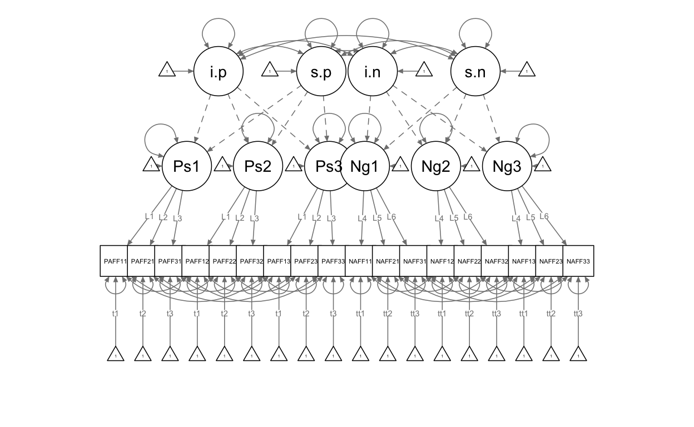

Types of longitudinal models other than growth models
With SEM there are many different types of longitudinal models you can run. The basic ones are:
Longitudinal CFA
Panel/cross lag/longitudinal path model/mediation
Growth models
Growth models + cross lags
Latent change/difference score models
Mixture or class based longitudinal models
library(lavaan)
long <- read.csv("~/Box/5165 Applied Longitudinal Data Analysis/SEM_workshop/longitudinal.csv")
summary(long)
PosAFF11 PosAFF21 PosAFF31 NegAFF11
Min. :1.365 Min. :0.4152 Min. :1.140 Min. :-0.8584
1st Qu.:2.739 1st Qu.:2.6343 1st Qu.:2.797 1st Qu.: 1.1035
Median :3.209 Median :3.1143 Median :3.204 Median : 1.5075
Mean :3.212 Mean :3.1050 Mean :3.248 Mean : 1.5220
3rd Qu.:3.688 3rd Qu.:3.6216 3rd Qu.:3.775 3rd Qu.: 1.9815
Max. :5.804 Max. :6.1970 Max. :6.048 Max. : 3.2403
NegAFF21 NegAFF31 PosAFF12 PosAFF22
Min. :-0.3991 Min. :-0.5606 Min. :1.528 Min. :0.6575
1st Qu.: 1.0229 1st Qu.: 1.0100 1st Qu.:2.852 1st Qu.:2.6571
Median : 1.3718 Median : 1.4335 Median :3.215 Median :3.1206
Mean : 1.3971 Mean : 1.3981 Mean :3.253 Mean :3.1256
3rd Qu.: 1.7566 3rd Qu.: 1.8101 3rd Qu.:3.637 3rd Qu.:3.5467
Max. : 2.9844 Max. : 2.7674 Max. :5.413 Max. :5.4420
PosAFF32 NegAFF12 NegAFF22
Min. :0.7369 Min. :0.1797 Min. :0.1784
1st Qu.:2.8484 1st Qu.:1.1464 1st Qu.:0.9963
Median :3.2692 Median :1.3818 Median :1.3172
Mean :3.2737 Mean :1.4115 Mean :1.3237
3rd Qu.:3.7170 3rd Qu.:1.7251 3rd Qu.:1.6382
Max. :5.9676 Max. :2.5033 Max. :2.5587
NegAFF32 PosAFF13 PosAFF23 PosAFF33
Min. :-0.03494 Min. :1.307 Min. :0.8057 Min. :1.629
1st Qu.: 1.02027 1st Qu.:2.979 1st Qu.:2.7147 1st Qu.:2.858
Median : 1.31692 Median :3.299 Median :3.0832 Median :3.325
Mean : 1.30002 Mean :3.302 Mean :3.0945 Mean :3.280
3rd Qu.: 1.56441 3rd Qu.:3.683 3rd Qu.:3.5296 3rd Qu.:3.698
Max. : 2.44236 Max. :4.712 Max. :4.8007 Max. :5.014
NegAFF13 NegAFF23 NegAFF33
Min. :-0.01837 Min. :0.147 Min. :0.3145
1st Qu.: 1.15739 1st Qu.:1.009 1st Qu.:1.0261
Median : 1.43937 Median :1.294 Median :1.3154
Mean : 1.43015 Mean :1.281 Mean :1.2974
3rd Qu.: 1.73650 3rd Qu.:1.560 3rd Qu.:1.5583
Max. : 2.75085 Max. :2.447 Max. :2.6385 Wide data for SEM models.
head(long)
PosAFF11 PosAFF21 PosAFF31 NegAFF11 NegAFF21 NegAFF31 PosAFF12
1 3.407196 3.161366 2.691232 2.4207020 2.3531140 2.338767 3.608672
2 2.594691 2.682974 2.676173 1.6652403 0.8228416 1.083938 3.103346
3 3.168698 2.854090 3.277873 1.5646086 1.6909398 1.502032 2.327999
4 4.600160 4.698997 4.751315 0.9352668 0.7944903 0.205178 4.254750
5 1.911294 2.184561 1.661057 1.6076395 1.5046016 1.209850 3.971308
6 3.472354 4.016982 4.021543 1.9754108 1.1348223 1.729405 3.845904
PosAFF22 PosAFF32 NegAFF12 NegAFF22 NegAFF32 PosAFF13 PosAFF23
1 2.385396 3.029975 2.283468 2.3173734 2.3932485 3.561401 3.506353
2 2.666753 3.251786 1.651941 1.7019345 1.3462416 2.893546 2.804488
3 3.061529 3.272173 1.749022 1.6237575 1.5763265 2.705572 2.310391
4 3.792440 3.934392 1.279030 0.8741891 1.1822674 3.212826 2.775791
5 4.674580 4.093508 1.019751 1.0376248 0.7776716 3.487932 2.673107
6 4.186825 4.316398 1.189548 1.1866801 1.3158520 3.236481 3.256453
PosAFF33 NegAFF13 NegAFF23 NegAFF33
1 3.862975 2.090484 1.3276333 1.6680488
2 2.637762 1.257376 1.6585273 1.4298172
3 2.841122 1.699849 1.7373582 1.8542867
4 3.239004 1.824778 1.3016450 1.5356285
5 3.093565 1.316975 0.7120284 0.7083461
6 4.023383 1.053895 1.4449087 0.9600753Anyone have some comments on naming conventions for this dataset?
1. Longitudinal CFA
Starting point in longitudinal analysis. Can be simply thought of as does this construct relate to itself across time? And, to the extent that it does not, is that due to changes in how the construct is measured over time?
Substantively, these analyses get at the relative rank order of people across assessment points. What is nice is that unlike using composites, this looks at latent correlations across time. Also nice is that different measures can be used eg a cognitive ability exam for children which naturally differs in content across age groups.
key questions: 1. Should the correlations be the same across time? Should we set them (constrain) to be equal? 2. Should the error variances be correlated? 3. Are the loadings the same across time?
long.cfa <- '
## define latent variables
Pos1 =~ PosAFF11 + PosAFF21 + PosAFF31
Pos2 =~ PosAFF12 + PosAFF22 + PosAFF32
Pos3 =~ PosAFF13 + PosAFF23 + PosAFF33
Neg1 =~ NegAFF11 + NegAFF21 + NegAFF31
Neg2 =~ NegAFF12 + NegAFF22 + NegAFF32
Neg3 =~ NegAFF13 + NegAFF23 + NegAFF33
## correlated residuals across time
PosAFF11 ~~ PosAFF12 + PosAFF13
PosAFF12 ~~ PosAFF13
PosAFF21 ~~ PosAFF22 + PosAFF23
PosAFF22 ~~ PosAFF23
PosAFF31 ~~ PosAFF32 + PosAFF33
PosAFF32 ~~ PosAFF33
NegAFF11 ~~ NegAFF12 + NegAFF13
NegAFF12 ~~ NegAFF13
NegAFF21 ~~ NegAFF22 + NegAFF23
NegAFF22 ~~ NegAFF23
NegAFF31 ~~ NegAFF32 + NegAFF33
NegAFF32 ~~ NegAFF33
'
fit.long.cfa <- cfa(long.cfa, data=long, std.lv=TRUE)
summary(fit.long.cfa)
lavaan 0.6-8 ended normally after 128 iterations
Estimator ML
Optimization method NLMINB
Number of model parameters 69
Number of observations 368
Model Test User Model:
Test statistic 119.443
Degrees of freedom 102
P-value (Chi-square) 0.114
Parameter Estimates:
Standard errors Standard
Information Expected
Information saturated (h1) model Structured
Latent Variables:
Estimate Std.Err z-value P(>|z|)
Pos1 =~
PosAFF11 0.654 0.030 21.936 0.000
PosAFF21 0.651 0.031 20.864 0.000
PosAFF31 0.685 0.031 22.361 0.000
Pos2 =~
PosAFF12 0.556 0.026 21.256 0.000
PosAFF22 0.638 0.030 21.448 0.000
PosAFF32 0.644 0.027 23.567 0.000
Pos3 =~
PosAFF13 0.508 0.024 21.028 0.000
PosAFF23 0.545 0.027 20.347 0.000
PosAFF33 0.538 0.026 20.827 0.000
Neg1 =~
NegAFF11 0.563 0.028 20.465 0.000
NegAFF21 0.479 0.024 19.856 0.000
NegAFF31 0.555 0.025 22.373 0.000
Neg2 =~
NegAFF12 0.365 0.019 18.989 0.000
NegAFF22 0.375 0.017 21.452 0.000
NegAFF32 0.368 0.017 21.383 0.000
Neg3 =~
NegAFF13 0.363 0.021 17.128 0.000
NegAFF23 0.341 0.017 19.493 0.000
NegAFF33 0.344 0.017 19.700 0.000
Covariances:
Estimate Std.Err z-value P(>|z|)
.PosAFF11 ~~
.PosAFF12 0.004 0.007 0.578 0.563
.PosAFF13 0.000 0.007 0.037 0.971
.PosAFF12 ~~
.PosAFF13 0.004 0.006 0.674 0.500
.PosAFF21 ~~
.PosAFF22 0.008 0.008 1.020 0.308
.PosAFF23 0.008 0.008 0.991 0.322
.PosAFF22 ~~
.PosAFF23 0.011 0.007 1.470 0.142
.PosAFF31 ~~
.PosAFF32 0.004 0.007 0.616 0.538
.PosAFF33 0.016 0.007 2.182 0.029
.PosAFF32 ~~
.PosAFF33 0.004 0.006 0.690 0.490
.NegAFF11 ~~
.NegAFF12 0.005 0.005 0.966 0.334
.NegAFF13 0.006 0.006 1.036 0.300
.NegAFF12 ~~
.NegAFF13 0.007 0.005 1.528 0.126
.NegAFF21 ~~
.NegAFF22 0.015 0.004 3.605 0.000
.NegAFF23 0.011 0.005 2.387 0.017
.NegAFF22 ~~
.NegAFF23 0.010 0.003 3.145 0.002
.NegAFF31 ~~
.NegAFF32 -0.006 0.004 -1.607 0.108
.NegAFF33 -0.008 0.004 -1.778 0.075
.NegAFF32 ~~
.NegAFF33 -0.001 0.003 -0.481 0.630
Pos1 ~~
Pos2 0.473 0.044 10.663 0.000
Pos3 0.399 0.048 8.228 0.000
Neg1 -0.436 0.047 -9.358 0.000
Neg2 -0.297 0.052 -5.706 0.000
Neg3 -0.169 0.056 -3.003 0.003
Pos2 ~~
Pos3 0.449 0.046 9.777 0.000
Neg1 -0.179 0.054 -3.279 0.001
Neg2 -0.543 0.041 -13.203 0.000
Neg3 -0.198 0.055 -3.578 0.000
Pos3 ~~
Neg1 -0.074 0.057 -1.304 0.192
Neg2 -0.167 0.056 -2.989 0.003
Neg3 -0.292 0.054 -5.442 0.000
Neg1 ~~
Neg2 0.526 0.043 12.317 0.000
Neg3 0.351 0.052 6.778 0.000
Neg2 ~~
Neg3 0.435 0.048 9.006 0.000
Variances:
Estimate Std.Err z-value P(>|z|)
.PosAFF11 0.096 0.011 8.497 0.000
.PosAFF21 0.130 0.013 9.956 0.000
.PosAFF31 0.095 0.012 7.944 0.000
.PosAFF12 0.087 0.009 10.044 0.000
.PosAFF22 0.110 0.011 9.883 0.000
.PosAFF32 0.055 0.009 6.438 0.000
.PosAFF13 0.070 0.008 8.319 0.000
.PosAFF23 0.098 0.011 9.317 0.000
.PosAFF33 0.085 0.010 8.716 0.000
.NegAFF11 0.104 0.011 9.546 0.000
.NegAFF21 0.091 0.009 10.363 0.000
.NegAFF31 0.056 0.009 6.475 0.000
.NegAFF12 0.062 0.006 10.835 0.000
.NegAFF22 0.037 0.004 8.445 0.000
.NegAFF32 0.033 0.004 7.917 0.000
.NegAFF13 0.084 0.008 10.660 0.000
.NegAFF23 0.043 0.005 8.170 0.000
.NegAFF33 0.038 0.005 7.372 0.000
Pos1 1.000
Pos2 1.000
Pos3 1.000
Neg1 1.000
Neg2 1.000
Neg3 1.000 unstandardized estimates
- Notice the difference in loadings
- Notice the difference in covariances
lavaan 0.6-8 ended normally after 144 iterations
Estimator ML
Optimization method NLMINB
Number of model parameters 69
Number of observations 368
Model Test User Model:
Test statistic 119.443
Degrees of freedom 102
P-value (Chi-square) 0.114
Parameter Estimates:
Standard errors Standard
Information Expected
Information saturated (h1) model Structured
Latent Variables:
Estimate Std.Err z-value P(>|z|)
Pos1 =~
PosAFF11 1.000
PosAFF21 0.996 0.041 24.232 0.000
PosAFF31 1.048 0.040 26.223 0.000
Pos2 =~
PosAFF12 1.000
PosAFF22 1.148 0.047 24.463 0.000
PosAFF32 1.159 0.043 27.012 0.000
Pos3 =~
PosAFF13 1.000
PosAFF23 1.072 0.049 22.027 0.000
PosAFF33 1.058 0.047 22.511 0.000
Neg1 =~
NegAFF11 1.000
NegAFF21 0.851 0.040 21.308 0.000
NegAFF31 0.985 0.042 23.372 0.000
Neg2 =~
NegAFF12 1.000
NegAFF22 1.027 0.049 21.002 0.000
NegAFF32 1.007 0.049 20.719 0.000
Neg3 =~
NegAFF13 1.000
NegAFF23 0.940 0.055 17.134 0.000
NegAFF33 0.948 0.056 16.997 0.000
Covariances:
Estimate Std.Err z-value P(>|z|)
.PosAFF11 ~~
.PosAFF12 0.004 0.007 0.578 0.563
.PosAFF13 0.000 0.007 0.037 0.971
.PosAFF12 ~~
.PosAFF13 0.004 0.006 0.674 0.500
.PosAFF21 ~~
.PosAFF22 0.008 0.008 1.020 0.308
.PosAFF23 0.008 0.008 0.991 0.322
.PosAFF22 ~~
.PosAFF23 0.011 0.007 1.470 0.142
.PosAFF31 ~~
.PosAFF32 0.004 0.007 0.616 0.538
.PosAFF33 0.016 0.007 2.182 0.029
.PosAFF32 ~~
.PosAFF33 0.004 0.006 0.690 0.490
.NegAFF11 ~~
.NegAFF12 0.005 0.005 0.966 0.334
.NegAFF13 0.006 0.006 1.036 0.300
.NegAFF12 ~~
.NegAFF13 0.007 0.005 1.528 0.126
.NegAFF21 ~~
.NegAFF22 0.015 0.004 3.605 0.000
.NegAFF23 0.011 0.005 2.387 0.017
.NegAFF22 ~~
.NegAFF23 0.010 0.003 3.145 0.002
.NegAFF31 ~~
.NegAFF32 -0.006 0.004 -1.607 0.108
.NegAFF33 -0.008 0.004 -1.778 0.075
.NegAFF32 ~~
.NegAFF33 -0.001 0.003 -0.481 0.630
Pos1 ~~
Pos2 0.172 0.023 7.457 0.000
Pos3 0.132 0.021 6.446 0.000
Neg1 -0.160 0.023 -6.937 0.000
Neg2 -0.071 0.014 -4.955 0.000
Neg3 -0.040 0.014 -2.866 0.004
Pos2 ~~
Pos3 0.127 0.018 7.088 0.000
Neg1 -0.056 0.018 -3.116 0.002
Neg2 -0.110 0.014 -8.074 0.000
Neg3 -0.040 0.012 -3.351 0.001
Pos3 ~~
Neg1 -0.021 0.016 -1.293 0.196
Neg2 -0.031 0.011 -2.860 0.004
Neg3 -0.054 0.011 -4.737 0.000
Neg1 ~~
Neg2 0.108 0.014 7.765 0.000
Neg3 0.072 0.013 5.512 0.000
Neg2 ~~
Neg3 0.058 0.009 6.483 0.000
Variances:
Estimate Std.Err z-value P(>|z|)
.PosAFF11 0.096 0.011 8.497 0.000
.PosAFF21 0.130 0.013 9.956 0.000
.PosAFF31 0.095 0.012 7.944 0.000
.PosAFF12 0.087 0.009 10.044 0.000
.PosAFF22 0.110 0.011 9.883 0.000
.PosAFF32 0.055 0.009 6.437 0.000
.PosAFF13 0.070 0.008 8.319 0.000
.PosAFF23 0.098 0.011 9.317 0.000
.PosAFF33 0.085 0.010 8.716 0.000
.NegAFF11 0.104 0.011 9.546 0.000
.NegAFF21 0.091 0.009 10.363 0.000
.NegAFF31 0.056 0.009 6.475 0.000
.NegAFF12 0.062 0.006 10.835 0.000
.NegAFF22 0.037 0.004 8.445 0.000
.NegAFF32 0.033 0.004 7.917 0.000
.NegAFF13 0.084 0.008 10.660 0.000
.NegAFF23 0.043 0.005 8.170 0.000
.NegAFF33 0.038 0.005 7.372 0.000
Pos1 0.427 0.039 10.968 0.000
Pos2 0.309 0.029 10.628 0.000
Pos3 0.258 0.025 10.514 0.000
Neg1 0.317 0.031 10.233 0.000
Neg2 0.133 0.014 9.494 0.000
Neg3 0.132 0.015 8.564 0.000summary(fit.long.cfa.us, standardized = TRUE)
lavaan 0.6-8 ended normally after 144 iterations
Estimator ML
Optimization method NLMINB
Number of model parameters 69
Number of observations 368
Model Test User Model:
Test statistic 119.443
Degrees of freedom 102
P-value (Chi-square) 0.114
Parameter Estimates:
Standard errors Standard
Information Expected
Information saturated (h1) model Structured
Latent Variables:
Estimate Std.Err z-value P(>|z|) Std.lv
Pos1 =~
PosAFF11 1.000 0.654
PosAFF21 0.996 0.041 24.232 0.000 0.651
PosAFF31 1.048 0.040 26.223 0.000 0.685
Pos2 =~
PosAFF12 1.000 0.556
PosAFF22 1.148 0.047 24.463 0.000 0.638
PosAFF32 1.159 0.043 27.012 0.000 0.644
Pos3 =~
PosAFF13 1.000 0.508
PosAFF23 1.072 0.049 22.027 0.000 0.545
PosAFF33 1.058 0.047 22.511 0.000 0.538
Neg1 =~
NegAFF11 1.000 0.563
NegAFF21 0.851 0.040 21.308 0.000 0.479
NegAFF31 0.985 0.042 23.372 0.000 0.555
Neg2 =~
NegAFF12 1.000 0.365
NegAFF22 1.027 0.049 21.002 0.000 0.375
NegAFF32 1.007 0.049 20.719 0.000 0.368
Neg3 =~
NegAFF13 1.000 0.363
NegAFF23 0.940 0.055 17.134 0.000 0.341
NegAFF33 0.948 0.056 16.997 0.000 0.344
Std.all
0.903
0.875
0.912
0.883
0.887
0.940
0.887
0.867
0.879
0.868
0.847
0.920
0.826
0.889
0.896
0.782
0.855
0.869
Covariances:
Estimate Std.Err z-value P(>|z|) Std.lv
.PosAFF11 ~~
.PosAFF12 0.004 0.007 0.578 0.563 0.004
.PosAFF13 0.000 0.007 0.037 0.971 0.000
.PosAFF12 ~~
.PosAFF13 0.004 0.006 0.674 0.500 0.004
.PosAFF21 ~~
.PosAFF22 0.008 0.008 1.020 0.308 0.008
.PosAFF23 0.008 0.008 0.991 0.322 0.008
.PosAFF22 ~~
.PosAFF23 0.011 0.007 1.470 0.142 0.011
.PosAFF31 ~~
.PosAFF32 0.004 0.007 0.616 0.538 0.004
.PosAFF33 0.016 0.007 2.182 0.029 0.016
.PosAFF32 ~~
.PosAFF33 0.004 0.006 0.690 0.490 0.004
.NegAFF11 ~~
.NegAFF12 0.005 0.005 0.966 0.334 0.005
.NegAFF13 0.006 0.006 1.036 0.300 0.006
.NegAFF12 ~~
.NegAFF13 0.007 0.005 1.528 0.126 0.007
.NegAFF21 ~~
.NegAFF22 0.015 0.004 3.605 0.000 0.015
.NegAFF23 0.011 0.005 2.387 0.017 0.011
.NegAFF22 ~~
.NegAFF23 0.010 0.003 3.145 0.002 0.010
.NegAFF31 ~~
.NegAFF32 -0.006 0.004 -1.607 0.108 -0.006
.NegAFF33 -0.008 0.004 -1.778 0.075 -0.008
.NegAFF32 ~~
.NegAFF33 -0.001 0.003 -0.481 0.630 -0.001
Pos1 ~~
Pos2 0.172 0.023 7.457 0.000 0.473
Pos3 0.132 0.021 6.446 0.000 0.399
Neg1 -0.160 0.023 -6.937 0.000 -0.436
Neg2 -0.071 0.014 -4.955 0.000 -0.297
Neg3 -0.040 0.014 -2.866 0.004 -0.169
Pos2 ~~
Pos3 0.127 0.018 7.088 0.000 0.449
Neg1 -0.056 0.018 -3.116 0.002 -0.179
Neg2 -0.110 0.014 -8.074 0.000 -0.543
Neg3 -0.040 0.012 -3.351 0.001 -0.198
Pos3 ~~
Neg1 -0.021 0.016 -1.293 0.196 -0.074
Neg2 -0.031 0.011 -2.860 0.004 -0.167
Neg3 -0.054 0.011 -4.737 0.000 -0.292
Neg1 ~~
Neg2 0.108 0.014 7.765 0.000 0.526
Neg3 0.072 0.013 5.512 0.000 0.351
Neg2 ~~
Neg3 0.058 0.009 6.483 0.000 0.435
Std.all
0.043
0.003
0.050
0.071
0.070
0.104
0.057
0.177
0.061
0.065
0.070
0.099
0.267
0.173
0.253
-0.147
-0.163
-0.041
0.473
0.399
-0.436
-0.297
-0.169
0.449
-0.179
-0.543
-0.198
-0.074
-0.167
-0.292
0.526
0.351
0.435
Variances:
Estimate Std.Err z-value P(>|z|) Std.lv
.PosAFF11 0.096 0.011 8.497 0.000 0.096
.PosAFF21 0.130 0.013 9.956 0.000 0.130
.PosAFF31 0.095 0.012 7.944 0.000 0.095
.PosAFF12 0.087 0.009 10.044 0.000 0.087
.PosAFF22 0.110 0.011 9.883 0.000 0.110
.PosAFF32 0.055 0.009 6.437 0.000 0.055
.PosAFF13 0.070 0.008 8.319 0.000 0.070
.PosAFF23 0.098 0.011 9.317 0.000 0.098
.PosAFF33 0.085 0.010 8.716 0.000 0.085
.NegAFF11 0.104 0.011 9.546 0.000 0.104
.NegAFF21 0.091 0.009 10.363 0.000 0.091
.NegAFF31 0.056 0.009 6.475 0.000 0.056
.NegAFF12 0.062 0.006 10.835 0.000 0.062
.NegAFF22 0.037 0.004 8.445 0.000 0.037
.NegAFF32 0.033 0.004 7.917 0.000 0.033
.NegAFF13 0.084 0.008 10.660 0.000 0.084
.NegAFF23 0.043 0.005 8.170 0.000 0.043
.NegAFF33 0.038 0.005 7.372 0.000 0.038
Pos1 0.427 0.039 10.968 0.000 1.000
Pos2 0.309 0.029 10.628 0.000 1.000
Pos3 0.258 0.025 10.514 0.000 1.000
Neg1 0.317 0.031 10.233 0.000 1.000
Neg2 0.133 0.014 9.494 0.000 1.000
Neg3 0.132 0.015 8.564 0.000 1.000
Std.all
0.184
0.235
0.168
0.220
0.213
0.117
0.214
0.249
0.227
0.246
0.283
0.153
0.317
0.209
0.198
0.389
0.270
0.245
1.000
1.000
1.000
1.000
1.000
1.000introducing means.
Notice how we can also esimate means of the variables, though we dont necessarily need to. These are now under the intercepts heading.
fit.long.cfa.us.mean <- cfa(long.cfa, meanstructure=TRUE, data=long, std.lv=FALSE)
summary(fit.long.cfa.us.mean)
lavaan 0.6-8 ended normally after 144 iterations
Estimator ML
Optimization method NLMINB
Number of model parameters 87
Number of observations 368
Model Test User Model:
Test statistic 119.443
Degrees of freedom 102
P-value (Chi-square) 0.114
Parameter Estimates:
Standard errors Standard
Information Expected
Information saturated (h1) model Structured
Latent Variables:
Estimate Std.Err z-value P(>|z|)
Pos1 =~
PosAFF11 1.000
PosAFF21 0.996 0.041 24.232 0.000
PosAFF31 1.048 0.040 26.223 0.000
Pos2 =~
PosAFF12 1.000
PosAFF22 1.148 0.047 24.463 0.000
PosAFF32 1.159 0.043 27.012 0.000
Pos3 =~
PosAFF13 1.000
PosAFF23 1.072 0.049 22.027 0.000
PosAFF33 1.058 0.047 22.511 0.000
Neg1 =~
NegAFF11 1.000
NegAFF21 0.851 0.040 21.308 0.000
NegAFF31 0.985 0.042 23.372 0.000
Neg2 =~
NegAFF12 1.000
NegAFF22 1.027 0.049 21.002 0.000
NegAFF32 1.007 0.049 20.719 0.000
Neg3 =~
NegAFF13 1.000
NegAFF23 0.940 0.055 17.134 0.000
NegAFF33 0.948 0.056 16.997 0.000
Covariances:
Estimate Std.Err z-value P(>|z|)
.PosAFF11 ~~
.PosAFF12 0.004 0.007 0.578 0.563
.PosAFF13 0.000 0.007 0.037 0.971
.PosAFF12 ~~
.PosAFF13 0.004 0.006 0.674 0.500
.PosAFF21 ~~
.PosAFF22 0.008 0.008 1.020 0.308
.PosAFF23 0.008 0.008 0.991 0.322
.PosAFF22 ~~
.PosAFF23 0.011 0.007 1.470 0.142
.PosAFF31 ~~
.PosAFF32 0.004 0.007 0.616 0.538
.PosAFF33 0.016 0.007 2.182 0.029
.PosAFF32 ~~
.PosAFF33 0.004 0.006 0.690 0.490
.NegAFF11 ~~
.NegAFF12 0.005 0.005 0.966 0.334
.NegAFF13 0.006 0.006 1.036 0.300
.NegAFF12 ~~
.NegAFF13 0.007 0.005 1.528 0.126
.NegAFF21 ~~
.NegAFF22 0.015 0.004 3.605 0.000
.NegAFF23 0.011 0.005 2.387 0.017
.NegAFF22 ~~
.NegAFF23 0.010 0.003 3.145 0.002
.NegAFF31 ~~
.NegAFF32 -0.006 0.004 -1.607 0.108
.NegAFF33 -0.008 0.004 -1.778 0.075
.NegAFF32 ~~
.NegAFF33 -0.001 0.003 -0.481 0.630
Pos1 ~~
Pos2 0.172 0.023 7.457 0.000
Pos3 0.132 0.021 6.446 0.000
Neg1 -0.160 0.023 -6.937 0.000
Neg2 -0.071 0.014 -4.955 0.000
Neg3 -0.040 0.014 -2.866 0.004
Pos2 ~~
Pos3 0.127 0.018 7.088 0.000
Neg1 -0.056 0.018 -3.116 0.002
Neg2 -0.110 0.014 -8.074 0.000
Neg3 -0.040 0.012 -3.351 0.001
Pos3 ~~
Neg1 -0.021 0.016 -1.293 0.196
Neg2 -0.031 0.011 -2.860 0.004
Neg3 -0.054 0.011 -4.737 0.000
Neg1 ~~
Neg2 0.108 0.014 7.765 0.000
Neg3 0.072 0.013 5.512 0.000
Neg2 ~~
Neg3 0.058 0.009 6.483 0.000
Intercepts:
Estimate Std.Err z-value P(>|z|)
.PosAFF11 3.212 0.038 85.141 0.000
.PosAFF21 3.105 0.039 80.039 0.000
.PosAFF31 3.248 0.039 82.975 0.000
.PosAFF12 3.253 0.033 99.077 0.000
.PosAFF22 3.126 0.037 83.350 0.000
.PosAFF32 3.274 0.036 91.552 0.000
.PosAFF13 3.302 0.030 110.512 0.000
.PosAFF23 3.094 0.033 94.436 0.000
.PosAFF33 3.280 0.032 102.909 0.000
.NegAFF11 1.522 0.034 45.016 0.000
.NegAFF21 1.397 0.030 47.359 0.000
.NegAFF31 1.398 0.031 44.488 0.000
.NegAFF12 1.412 0.023 61.269 0.000
.NegAFF22 1.324 0.022 60.181 0.000
.NegAFF32 1.300 0.021 60.718 0.000
.NegAFF13 1.430 0.024 59.112 0.000
.NegAFF23 1.281 0.021 61.551 0.000
.NegAFF33 1.297 0.021 62.890 0.000
Pos1 0.000
Pos2 0.000
Pos3 0.000
Neg1 0.000
Neg2 0.000
Neg3 0.000
Variances:
Estimate Std.Err z-value P(>|z|)
.PosAFF11 0.096 0.011 8.497 0.000
.PosAFF21 0.130 0.013 9.956 0.000
.PosAFF31 0.095 0.012 7.944 0.000
.PosAFF12 0.087 0.009 10.044 0.000
.PosAFF22 0.110 0.011 9.883 0.000
.PosAFF32 0.055 0.009 6.437 0.000
.PosAFF13 0.070 0.008 8.319 0.000
.PosAFF23 0.098 0.011 9.317 0.000
.PosAFF33 0.085 0.010 8.716 0.000
.NegAFF11 0.104 0.011 9.546 0.000
.NegAFF21 0.091 0.009 10.363 0.000
.NegAFF31 0.056 0.009 6.475 0.000
.NegAFF12 0.062 0.006 10.835 0.000
.NegAFF22 0.037 0.004 8.445 0.000
.NegAFF32 0.033 0.004 7.917 0.000
.NegAFF13 0.084 0.008 10.660 0.000
.NegAFF23 0.043 0.005 8.170 0.000
.NegAFF33 0.038 0.005 7.372 0.000
Pos1 0.427 0.039 10.968 0.000
Pos2 0.309 0.029 10.628 0.000
Pos3 0.258 0.025 10.514 0.000
Neg1 0.317 0.031 10.233 0.000
Neg2 0.133 0.014 9.494 0.000
Neg3 0.132 0.015 8.564 0.000Why are our latent variables zero? The cfa and sem functions fix the latent variable intercepts (which in this case correspond to the latent means) to zero. We have to override these defaults by asking the model to fit them. More on this below.
1.a Measurement Invariance (MI)
To meaningfully look at means, we need to have the means mean the same thing. In other words, without using the word mean, we need to make sure that the measurement of the construct is consistent across time. If it isnt, then what we may see as change actually reflect people responding to the indicators differently. For example, a common item on an extraversion scale is Do you like to go to parties? This is likely interpreted differently by a 20 year old compared to a 70 year old. This is due to what is normative, what parties look like that a typical 20 and 70 year old go to, etcetera. Another way to look at this is the item 2 x 3 = X, solve for X. The reasons that a 8 year old and a 18 year old get the item incorrect is likely for different reasons (ie knowledge vs not being careful).
Maturation is the easiest way to see differences, but it also happens when you want to compare groups ie some anova design. This assumption is typically never critically examined.
types of MI
Configural (pattern). Asks: does your measure have the same factor structure? Typically always true with a decent measure of your construct. Can be tested through test statistics and eye-balling. Serves as default model to compare with our more stringent models.
Weak (metric/loading). Can be easily met. Not meeting this shows big problems, unless you are working with a really large dataset (where there is large power to find differences).
Strong (Scalar/intercept). Need to meet this designation to run longitudinal models and look at means across time.
Strict (residual/error variance). Not necessarily better than Strong, and does not need to be satisfied to use longitudinal models. Why might this not hold even if you are assessing the same construct? Hint: think of what residual variance is made up of.
cfa <- 'Pos1 =~ PosAFF11 + PosAFF21 + PosAFF31'
fit.cfa <- cfa(cfa, data=long, std.lv=TRUE)
semPaths(fit.cfa)

Testing MI
configural (baseline)
config <- '
## define latent variables
Pos1 =~ PosAFF11 + PosAFF21 + PosAFF31
Pos2 =~ PosAFF12 + PosAFF22 + PosAFF32
Pos3 =~ PosAFF13 + PosAFF23 + PosAFF33
## correlated residuals across time
PosAFF11 ~~ PosAFF12 + PosAFF13
PosAFF12 ~~ PosAFF13
PosAFF21 ~~ PosAFF22 + PosAFF23
PosAFF22 ~~ PosAFF23
PosAFF31 ~~ PosAFF32 + PosAFF33
PosAFF32 ~~ PosAFF33
'
config <- cfa(config, data=long, meanstructure=TRUE, std.lv=TRUE)
summary(config, standardized=TRUE, fit.measures=TRUE)
lavaan 0.6-8 ended normally after 76 iterations
Estimator ML
Optimization method NLMINB
Number of model parameters 39
Number of observations 368
Model Test User Model:
Test statistic 9.266
Degrees of freedom 15
P-value (Chi-square) 0.863
Model Test Baseline Model:
Test statistic 2688.088
Degrees of freedom 36
P-value 0.000
User Model versus Baseline Model:
Comparative Fit Index (CFI) 1.000
Tucker-Lewis Index (TLI) 1.005
Loglikelihood and Information Criteria:
Loglikelihood user model (H0) -2040.957
Loglikelihood unrestricted model (H1) -2036.324
Akaike (AIC) 4159.914
Bayesian (BIC) 4312.329
Sample-size adjusted Bayesian (BIC) 4188.596
Root Mean Square Error of Approximation:
RMSEA 0.000
90 Percent confidence interval - lower 0.000
90 Percent confidence interval - upper 0.026
P-value RMSEA <= 0.05 0.997
Standardized Root Mean Square Residual:
SRMR 0.011
Parameter Estimates:
Standard errors Standard
Information Expected
Information saturated (h1) model Structured
Latent Variables:
Estimate Std.Err z-value P(>|z|) Std.lv
Pos1 =~
PosAFF11 0.656 0.030 22.030 0.000 0.656
PosAFF21 0.652 0.031 20.908 0.000 0.652
PosAFF31 0.682 0.031 22.157 0.000 0.682
Pos2 =~
PosAFF12 0.555 0.026 21.138 0.000 0.555
PosAFF22 0.643 0.030 21.651 0.000 0.643
PosAFF32 0.642 0.027 23.348 0.000 0.642
Pos3 =~
PosAFF13 0.509 0.024 21.036 0.000 0.509
PosAFF23 0.545 0.027 20.347 0.000 0.545
PosAFF33 0.537 0.026 20.763 0.000 0.537
Std.all
0.906
0.877
0.908
0.881
0.894
0.936
0.888
0.867
0.878
Covariances:
Estimate Std.Err z-value P(>|z|) Std.lv
.PosAFF11 ~~
.PosAFF12 0.002 0.007 0.325 0.745 0.002
.PosAFF13 0.001 0.007 0.207 0.836 0.001
.PosAFF12 ~~
.PosAFF13 0.003 0.006 0.517 0.605 0.003
.PosAFF21 ~~
.PosAFF22 0.006 0.008 0.784 0.433 0.006
.PosAFF23 0.006 0.008 0.773 0.439 0.006
.PosAFF22 ~~
.PosAFF23 0.011 0.007 1.525 0.127 0.011
.PosAFF31 ~~
.PosAFF32 0.008 0.007 1.097 0.273 0.008
.PosAFF33 0.016 0.007 2.215 0.027 0.016
.PosAFF32 ~~
.PosAFF33 0.005 0.006 0.773 0.440 0.005
Pos1 ~~
Pos2 0.471 0.044 10.609 0.000 0.471
Pos3 0.399 0.048 8.226 0.000 0.399
Pos2 ~~
Pos3 0.450 0.046 9.806 0.000 0.450
Std.all
0.024
0.017
0.039
0.056
0.055
0.111
0.100
0.177
0.068
0.471
0.399
0.450
Intercepts:
Estimate Std.Err z-value P(>|z|) Std.lv
.PosAFF11 3.212 0.038 85.122 0.000 3.212
.PosAFF21 3.105 0.039 80.035 0.000 3.105
.PosAFF31 3.248 0.039 82.962 0.000 3.248
.PosAFF12 3.253 0.033 99.116 0.000 3.253
.PosAFF22 3.126 0.037 83.356 0.000 3.126
.PosAFF32 3.274 0.036 91.602 0.000 3.274
.PosAFF13 3.302 0.030 110.504 0.000 3.302
.PosAFF23 3.094 0.033 94.403 0.000 3.094
.PosAFF33 3.280 0.032 102.942 0.000 3.280
Pos1 0.000 0.000
Pos2 0.000 0.000
Pos3 0.000 0.000
Std.all
4.437
4.172
4.325
5.167
4.345
4.775
5.760
4.921
5.366
0.000
0.000
0.000
Variances:
Estimate Std.Err z-value P(>|z|) Std.lv
.PosAFF11 0.093 0.011 8.155 0.000 0.093
.PosAFF21 0.128 0.013 9.770 0.000 0.128
.PosAFF31 0.099 0.012 8.092 0.000 0.099
.PosAFF12 0.089 0.009 9.942 0.000 0.089
.PosAFF22 0.104 0.011 9.363 0.000 0.104
.PosAFF32 0.058 0.009 6.467 0.000 0.058
.PosAFF13 0.070 0.008 8.211 0.000 0.070
.PosAFF23 0.098 0.011 9.234 0.000 0.098
.PosAFF33 0.086 0.010 8.719 0.000 0.086
Pos1 1.000 1.000
Pos2 1.000 1.000
Pos3 1.000 1.000
Std.all
0.178
0.231
0.176
0.224
0.202
0.124
0.212
0.248
0.229
1.000
1.000
1.000Notice that we didnt do anything different here except for fitting a mean structure and ask for fit.measures in the output.
Weak (constrain loadings)
With SEM models you can constrain or fix certain parameters to be whatever you want them to be. The syntax is some number or letters followed by an *. If the values are numbers, then it will force the parameters to be that number. If they are letter, then it names the parameter and forces all of those with the same naming scheme to be equivalent. But it allows the estimation to figure out what number it should be.
Weak measurement invariance test is to constrain the items to be equivalent across waves.
A special character is to relax constraints that are automatically included. Here NA is used to allow the latent variance at time 2 and 3 to be estimated, rather than to be constrained to 1 (bc below we used a fixed factor approach)weak <- '
## define latent variables
Pos1 =~ L1*PosAFF11 + L2*PosAFF21 + L3*PosAFF31
Pos2 =~ L1*PosAFF12 + L2*PosAFF22 + L3*PosAFF32
Pos3 =~ L1*PosAFF13 + L2*PosAFF23 + L3*PosAFF33
## free latent variances at later times (only set the scale once)
Pos2 ~~ NA*Pos2
Pos3 ~~ NA*Pos3
## correlated residuals across time
PosAFF11 ~~ PosAFF12 + PosAFF13
PosAFF12 ~~ PosAFF13
PosAFF21 ~~ PosAFF22 + PosAFF23
PosAFF22 ~~ PosAFF23
PosAFF31 ~~ PosAFF32 + PosAFF33
PosAFF32 ~~ PosAFF33
'
weak <- cfa(weak, data=long, meanstructure=TRUE, std.lv=TRUE)
summary(weak, standardized=TRUE, fit.measures=TRUE)
lavaan 0.6-8 ended normally after 81 iterations
Estimator ML
Optimization method NLMINB
Number of model parameters 41
Number of equality constraints 6
Number of observations 368
Model Test User Model:
Test statistic 17.684
Degrees of freedom 19
P-value (Chi-square) 0.544
Model Test Baseline Model:
Test statistic 2688.088
Degrees of freedom 36
P-value 0.000
User Model versus Baseline Model:
Comparative Fit Index (CFI) 1.000
Tucker-Lewis Index (TLI) 1.001
Loglikelihood and Information Criteria:
Loglikelihood user model (H0) -2045.166
Loglikelihood unrestricted model (H1) -2036.324
Akaike (AIC) 4160.332
Bayesian (BIC) 4297.114
Sample-size adjusted Bayesian (BIC) 4186.072
Root Mean Square Error of Approximation:
RMSEA 0.000
90 Percent confidence interval - lower 0.000
90 Percent confidence interval - upper 0.042
P-value RMSEA <= 0.05 0.983
Standardized Root Mean Square Residual:
SRMR 0.021
Parameter Estimates:
Standard errors Standard
Information Expected
Information saturated (h1) model Structured
Latent Variables:
Estimate Std.Err z-value P(>|z|) Std.lv
Pos1 =~
PosAFF11 (L1) 0.631 0.027 23.651 0.000 0.631
PosAFF21 (L2) 0.677 0.029 23.460 0.000 0.677
PosAFF31 (L3) 0.686 0.029 23.837 0.000 0.686
Pos2 =~
PosAFF12 (L1) 0.631 0.027 23.651 0.000 0.582
PosAFF22 (L2) 0.677 0.029 23.460 0.000 0.625
PosAFF32 (L3) 0.686 0.029 23.837 0.000 0.633
Pos3 =~
PosAFF13 (L1) 0.631 0.027 23.651 0.000 0.503
PosAFF23 (L2) 0.677 0.029 23.460 0.000 0.540
PosAFF33 (L3) 0.686 0.029 23.837 0.000 0.547
Std.all
0.894
0.887
0.910
0.894
0.886
0.931
0.883
0.864
0.885
Covariances:
Estimate Std.Err z-value P(>|z|) Std.lv
.PosAFF11 ~~
.PosAFF12 0.003 0.007 0.395 0.693 0.003
.PosAFF13 0.002 0.007 0.231 0.817 0.002
.PosAFF12 ~~
.PosAFF13 0.002 0.006 0.404 0.686 0.002
.PosAFF21 ~~
.PosAFF22 0.006 0.008 0.676 0.499 0.006
.PosAFF23 0.005 0.008 0.646 0.518 0.005
.PosAFF22 ~~
.PosAFF23 0.012 0.007 1.598 0.110 0.012
.PosAFF31 ~~
.PosAFF32 0.008 0.007 1.185 0.236 0.008
.PosAFF33 0.016 0.007 2.214 0.027 0.016
.PosAFF32 ~~
.PosAFF33 0.005 0.006 0.766 0.444 0.005
Pos1 ~~
Pos2 0.437 0.046 9.404 0.000 0.474
Pos3 0.319 0.042 7.578 0.000 0.400
Pos2 ~~
Pos3 0.332 0.047 7.030 0.000 0.450
Std.all
0.029
0.018
0.031
0.049
0.047
0.114
0.107
0.182
0.067
0.474
0.400
0.450
Intercepts:
Estimate Std.Err z-value P(>|z|) Std.lv
.PosAFF11 3.212 0.037 87.342 0.000 3.212
.PosAFF21 3.105 0.040 78.061 0.000 3.105
.PosAFF31 3.248 0.039 82.691 0.000 3.248
.PosAFF12 3.253 0.034 95.798 0.000 3.253
.PosAFF22 3.126 0.037 85.004 0.000 3.126
.PosAFF32 3.274 0.035 92.400 0.000 3.274
.PosAFF13 3.302 0.030 111.238 0.000 3.302
.PosAFF23 3.094 0.033 94.971 0.000 3.094
.PosAFF33 3.280 0.032 101.745 0.000 3.280
Pos1 0.000 0.000
Pos2 0.000 0.000
Pos3 0.000 0.000
Std.all
4.553
4.069
4.311
4.994
4.431
4.817
5.799
4.951
5.304
0.000
0.000
0.000
Variances:
Estimate Std.Err z-value P(>|z|) Std.lv
Pos2 0.853 0.086 9.942 0.000 1.000
Pos3 0.636 0.067 9.479 0.000 1.000
.PosAFF11 0.100 0.011 9.159 0.000 0.100
.PosAFF21 0.124 0.013 9.501 0.000 0.124
.PosAFF31 0.098 0.012 8.261 0.000 0.098
.PosAFF12 0.085 0.009 9.548 0.000 0.085
.PosAFF22 0.107 0.011 9.929 0.000 0.107
.PosAFF32 0.061 0.009 7.123 0.000 0.061
.PosAFF13 0.071 0.008 8.812 0.000 0.071
.PosAFF23 0.099 0.010 9.680 0.000 0.099
.PosAFF33 0.083 0.009 8.776 0.000 0.083
Pos1 1.000 1.000
Std.all
1.000
1.000
0.201
0.213
0.172
0.201
0.215
0.132
0.219
0.254
0.218
1.000Strong (constrain loadings and intercepts)
Strong introduces means to the equation. Well, they were there before, estimated by default because we set meanstructure = TRUE. But now we are going to constrain the means of each item to be the same across time, again using labels.
Why are we doing that if we want to test whether people change? Shouldnt changes in the means exist? Well, we can
strong <- '
## define latent variables
Pos1 =~ L1*PosAFF11 + L2*PosAFF21 + L3*PosAFF31
Pos2 =~ L1*PosAFF12 + L2*PosAFF22 + L3*PosAFF32
Pos3 =~ L1*PosAFF13 + L2*PosAFF23 + L3*PosAFF33
## free latent variances at later times (only set the scale once)
Pos2 ~~ NA*Pos2
Pos3 ~~ NA*Pos3
## correlated residuals across time
PosAFF11 ~~ PosAFF12 + PosAFF13
PosAFF12 ~~ PosAFF13
PosAFF21 ~~ PosAFF22 + PosAFF23
PosAFF22 ~~ PosAFF23
PosAFF31 ~~ PosAFF32 + PosAFF33
PosAFF32 ~~ PosAFF33
## constrain intercepts across time
PosAFF11 ~ t1*1
PosAFF21 ~ t2*1
PosAFF31 ~ t3*1
PosAFF12 ~ t1*1
PosAFF22 ~ t2*1
PosAFF32 ~ t3*1
PosAFF13 ~ t1*1
PosAFF23 ~ t2*1
PosAFF33 ~ t3*1
## free latent means at later times (only set the scale once)
Pos2 ~ NA*1
Pos3 ~ NA*1'
strong <- cfa(strong, data=long, meanstructure=TRUE, std.lv=TRUE)
summary(strong, standardized=TRUE, fit.measures=TRUE)
lavaan 0.6-8 ended normally after 85 iterations
Estimator ML
Optimization method NLMINB
Number of model parameters 43
Number of equality constraints 12
Number of observations 368
Model Test User Model:
Test statistic 30.144
Degrees of freedom 23
P-value (Chi-square) 0.145
Model Test Baseline Model:
Test statistic 2688.088
Degrees of freedom 36
P-value 0.000
User Model versus Baseline Model:
Comparative Fit Index (CFI) 0.997
Tucker-Lewis Index (TLI) 0.996
Loglikelihood and Information Criteria:
Loglikelihood user model (H0) -2051.396
Loglikelihood unrestricted model (H1) -2036.324
Akaike (AIC) 4164.792
Bayesian (BIC) 4285.943
Sample-size adjusted Bayesian (BIC) 4187.591
Root Mean Square Error of Approximation:
RMSEA 0.029
90 Percent confidence interval - lower 0.000
90 Percent confidence interval - upper 0.055
P-value RMSEA <= 0.05 0.901
Standardized Root Mean Square Residual:
SRMR 0.024
Parameter Estimates:
Standard errors Standard
Information Expected
Information saturated (h1) model Structured
Latent Variables:
Estimate Std.Err z-value P(>|z|) Std.lv
Pos1 =~
PosAFF11 (L1) 0.631 0.027 23.635 0.000 0.631
PosAFF21 (L2) 0.676 0.029 23.441 0.000 0.676
PosAFF31 (L3) 0.686 0.029 23.838 0.000 0.686
Pos2 =~
PosAFF12 (L1) 0.631 0.027 23.635 0.000 0.582
PosAFF22 (L2) 0.676 0.029 23.441 0.000 0.624
PosAFF32 (L3) 0.686 0.029 23.838 0.000 0.633
Pos3 =~
PosAFF13 (L1) 0.631 0.027 23.635 0.000 0.503
PosAFF23 (L2) 0.676 0.029 23.441 0.000 0.539
PosAFF33 (L3) 0.686 0.029 23.838 0.000 0.547
Std.all
0.893
0.886
0.910
0.894
0.886
0.932
0.882
0.862
0.885
Covariances:
Estimate Std.Err z-value P(>|z|) Std.lv
.PosAFF11 ~~
.PosAFF12 0.003 0.007 0.471 0.638 0.003
.PosAFF13 0.000 0.007 0.030 0.976 0.000
.PosAFF12 ~~
.PosAFF13 0.002 0.006 0.299 0.765 0.002
.PosAFF21 ~~
.PosAFF22 0.006 0.008 0.718 0.473 0.006
.PosAFF23 0.004 0.008 0.521 0.602 0.004
.PosAFF22 ~~
.PosAFF23 0.011 0.007 1.530 0.126 0.011
.PosAFF31 ~~
.PosAFF32 0.008 0.007 1.160 0.246 0.008
.PosAFF33 0.017 0.007 2.261 0.024 0.017
.PosAFF32 ~~
.PosAFF33 0.005 0.006 0.795 0.427 0.005
Pos1 ~~
Pos2 0.438 0.047 9.409 0.000 0.474
Pos3 0.320 0.042 7.590 0.000 0.401
Pos2 ~~
Pos3 0.332 0.047 7.027 0.000 0.450
Std.all
0.035
0.002
0.023
0.051
0.038
0.109
0.105
0.187
0.070
0.474
0.401
0.450
Intercepts:
Estimate Std.Err z-value P(>|z|) Std.lv
.PosAFF11 (t1) 3.237 0.035 92.743 0.000 3.237
.PosAFF21 (t2) 3.084 0.038 81.945 0.000 3.084
.PosAFF31 (t3) 3.244 0.038 85.408 0.000 3.244
.PosAFF12 (t1) 3.237 0.035 92.743 0.000 3.237
.PosAFF22 (t2) 3.084 0.038 81.945 0.000 3.084
.PosAFF32 (t3) 3.244 0.038 85.408 0.000 3.244
.PosAFF13 (t1) 3.237 0.035 92.743 0.000 3.237
.PosAFF23 (t2) 3.084 0.038 81.945 0.000 3.084
.PosAFF33 (t3) 3.244 0.038 85.408 0.000 3.244
Pos2 0.044 0.055 0.798 0.425 0.047
Pos3 0.058 0.055 1.043 0.297 0.072
Pos1 0.000 0.000
Std.all
4.583
4.043
4.304
4.967
4.375
4.771
5.674
4.931
5.249
0.047
0.072
0.000
Variances:
Estimate Std.Err z-value P(>|z|) Std.lv
Pos2 0.853 0.086 9.942 0.000 1.000
Pos3 0.636 0.067 9.475 0.000 1.000
.PosAFF11 0.101 0.011 9.188 0.000 0.101
.PosAFF21 0.125 0.013 9.527 0.000 0.125
.PosAFF31 0.097 0.012 8.216 0.000 0.097
.PosAFF12 0.086 0.009 9.551 0.000 0.086
.PosAFF22 0.107 0.011 9.947 0.000 0.107
.PosAFF32 0.061 0.009 7.094 0.000 0.061
.PosAFF13 0.073 0.008 8.865 0.000 0.073
.PosAFF23 0.101 0.010 9.725 0.000 0.101
.PosAFF33 0.083 0.009 8.706 0.000 0.083
Pos1 1.000 1.000
Std.all
1.000
1.000
0.203
0.215
0.172
0.201
0.216
0.132
0.223
0.257
0.216
1.000Strict (loadings, intercept, residual variances)
strict <- '
## define latent variables
Pos1 =~ L1*PosAFF11 + L2*PosAFF21 + L3*PosAFF31
Pos2 =~ L1*PosAFF12 + L2*PosAFF22 + L3*PosAFF32
Pos3 =~ L1*PosAFF13 + L2*PosAFF23 + L3*PosAFF33
## free latent variances at later times (only set the scale once)
Pos2 ~~ NA*Pos2
Pos3 ~~ NA*Pos3
## correlated residuals across time
PosAFF11 ~~ PosAFF12 + PosAFF13
PosAFF12 ~~ PosAFF13
PosAFF21 ~~ PosAFF22 + PosAFF23
PosAFF22 ~~ PosAFF23
PosAFF31 ~~ PosAFF32 + PosAFF33
PosAFF32 ~~ PosAFF33
## equality of residuals
PosAFF11 ~~ r*PosAFF11
PosAFF12 ~~ r*PosAFF12
PosAFF13 ~~ r*PosAFF13
PosAFF21 ~~ r*PosAFF21
PosAFF22 ~~ r*PosAFF22
PosAFF23 ~~ r*PosAFF23
PosAFF31 ~~ r*PosAFF31
PosAFF32 ~~ r*PosAFF32
PosAFF33 ~~ r*PosAFF33
## constrain intercepts across time
PosAFF11 ~ t1*1
PosAFF21 ~ t2*1
PosAFF31 ~ t3*1
PosAFF12 ~ t1*1
PosAFF22 ~ t2*1
PosAFF32 ~ t3*1
PosAFF13 ~ t1*1
PosAFF23 ~ t2*1
PosAFF33 ~ t3*1
## free latent means at later times (only set the scale once)
Pos2 ~ NA*1
Pos3 ~ NA*1'
strict <- cfa(strict, data=long, meanstructure=TRUE, std.lv=TRUE)
summary(strict, standardized=TRUE, fit.measures=TRUE)
lavaan 0.6-8 ended normally after 82 iterations
Estimator ML
Optimization method NLMINB
Number of model parameters 43
Number of equality constraints 20
Number of observations 368
Model Test User Model:
Test statistic 60.491
Degrees of freedom 31
P-value (Chi-square) 0.001
Model Test Baseline Model:
Test statistic 2688.088
Degrees of freedom 36
P-value 0.000
User Model versus Baseline Model:
Comparative Fit Index (CFI) 0.989
Tucker-Lewis Index (TLI) 0.987
Loglikelihood and Information Criteria:
Loglikelihood user model (H0) -2066.569
Loglikelihood unrestricted model (H1) -2036.324
Akaike (AIC) 4179.139
Bayesian (BIC) 4269.025
Sample-size adjusted Bayesian (BIC) 4196.054
Root Mean Square Error of Approximation:
RMSEA 0.051
90 Percent confidence interval - lower 0.031
90 Percent confidence interval - upper 0.070
P-value RMSEA <= 0.05 0.445
Standardized Root Mean Square Residual:
SRMR 0.026
Parameter Estimates:
Standard errors Standard
Information Expected
Information saturated (h1) model Structured
Latent Variables:
Estimate Std.Err z-value P(>|z|) Std.lv
Pos1 =~
PosAFF11 (L1) 0.631 0.026 23.891 0.000 0.631
PosAFF21 (L2) 0.689 0.028 24.210 0.000 0.689
PosAFF31 (L3) 0.680 0.028 24.061 0.000 0.680
Pos2 =~
PosAFF12 (L1) 0.631 0.026 23.891 0.000 0.579
PosAFF22 (L2) 0.689 0.028 24.210 0.000 0.632
PosAFF32 (L3) 0.680 0.028 24.061 0.000 0.623
Pos3 =~
PosAFF13 (L1) 0.631 0.026 23.891 0.000 0.500
PosAFF23 (L2) 0.689 0.028 24.210 0.000 0.545
PosAFF33 (L3) 0.680 0.028 24.061 0.000 0.538
Std.all
0.901
0.915
0.913
0.885
0.901
0.899
0.854
0.873
0.871
Covariances:
Estimate Std.Err z-value P(>|z|) Std.lv
.PosAFF11 ~~
.PosAFF12 0.004 0.007 0.617 0.537 0.004
.PosAFF13 0.002 0.007 0.280 0.780 0.002
.PosAFF12 ~~
.PosAFF13 0.003 0.007 0.394 0.693 0.003
.PosAFF21 ~~
.PosAFF22 0.003 0.007 0.346 0.730 0.003
.PosAFF23 0.002 0.007 0.228 0.820 0.002
.PosAFF22 ~~
.PosAFF23 0.009 0.007 1.259 0.208 0.009
.PosAFF31 ~~
.PosAFF32 0.011 0.007 1.508 0.132 0.011
.PosAFF33 0.016 0.007 2.310 0.021 0.016
.PosAFF32 ~~
.PosAFF33 0.008 0.007 1.186 0.236 0.008
Pos1 ~~
Pos2 0.433 0.046 9.372 0.000 0.472
Pos3 0.318 0.042 7.613 0.000 0.402
Pos2 ~~
Pos3 0.330 0.047 7.031 0.000 0.454
Std.all
0.045
0.020
0.029
0.027
0.018
0.098
0.117
0.177
0.091
0.472
0.402
0.454
Intercepts:
Estimate Std.Err z-value P(>|z|) Std.lv
.PosAFF11 (t1) 3.236 0.035 92.686 0.000 3.236
.PosAFF21 (t2) 3.087 0.038 81.529 0.000 3.087
.PosAFF31 (t3) 3.245 0.038 86.233 0.000 3.245
.PosAFF12 (t1) 3.236 0.035 92.686 0.000 3.236
.PosAFF22 (t2) 3.087 0.038 81.529 0.000 3.087
.PosAFF32 (t3) 3.245 0.038 86.233 0.000 3.245
.PosAFF13 (t1) 3.236 0.035 92.686 0.000 3.236
.PosAFF23 (t2) 3.087 0.038 81.529 0.000 3.087
.PosAFF33 (t3) 3.245 0.038 86.233 0.000 3.245
Pos2 0.044 0.055 0.799 0.424 0.048
Pos3 0.052 0.055 0.945 0.345 0.066
Pos1 0.000 0.000
Std.all
4.617
4.100
4.359
4.947
4.402
4.679
5.530
4.944
5.251
0.048
0.066
0.000
Variances:
Estimate Std.Err z-value P(>|z|) Std.lv
Pos2 0.841 0.085 9.950 0.000 1.000
Pos3 0.627 0.066 9.494 0.000 1.000
.PosAFF11 (r) 0.093 0.003 33.038 0.000 0.093
.PosAFF12 (r) 0.093 0.003 33.038 0.000 0.093
.PosAFF13 (r) 0.093 0.003 33.038 0.000 0.093
.PosAFF21 (r) 0.093 0.003 33.038 0.000 0.093
.PosAFF22 (r) 0.093 0.003 33.038 0.000 0.093
.PosAFF23 (r) 0.093 0.003 33.038 0.000 0.093
.PosAFF31 (r) 0.093 0.003 33.038 0.000 0.093
.PosAFF32 (r) 0.093 0.003 33.038 0.000 0.093
.PosAFF33 (r) 0.093 0.003 33.038 0.000 0.093
Pos1 1.000 1.000
Std.all
1.000
1.000
0.188
0.216
0.270
0.163
0.188
0.237
0.167
0.192
0.242
1.000Note that there are other types of MI that we could investigate, depending on what we are interested in. We could look at equality of latent means and variances, as well as regressions, if they were in the model.
Comparing the models
Usually done through chi-square difference test. But this is a very sensitive test, especially with larger samples. Better to look at changes in CFI. If delta is .01 or greater than maybe it shows misfit.
##Compare configural and weak model
anova(config, weak)
Chi-Squared Difference Test
Df AIC BIC Chisq Chisq diff Df diff Pr(>Chisq)
config 15 4159.9 4312.3 9.2658
weak 19 4160.3 4297.1 17.6836 8.4179 4 0.07742 .
---
Signif. codes: 0 '***' 0.001 '**' 0.01 '*' 0.05 '.' 0.1 ' ' 1##Compare weak and strong model
anova(weak, strong)
Chi-Squared Difference Test
Df AIC BIC Chisq Chisq diff Df diff Pr(>Chisq)
weak 19 4160.3 4297.1 17.684
strong 23 4164.8 4285.9 30.144 12.461 4 0.01424 *
---
Signif. codes: 0 '***' 0.001 '**' 0.01 '*' 0.05 '.' 0.1 ' ' 1fitmeasures(weak)['cfi']
cfi
1 fitmeasures(strong)['cfi']
cfi
0.9973062 fitmeasures(strict)['cfi']
cfi
0.9888801 Group comparisons
group <- read_csv("~/Box/5165 Applied Longitudinal Data Analysis/Longitudinal/group.csv")
head(group)
# A tibble: 6 x 7
P1 P2 P3 N1 N2 N3 Grade
<dbl> <dbl> <dbl> <dbl> <dbl> <dbl> <chr>
1 2.75 3.42 3.27 1.71 1.45 1.76 7th
2 4.18 3.49 3.36 3.43 2.70 2.48 7th
3 2.17 2.69 2.90 1.06 0.726 1.15 7th
4 2.68 2.88 3.28 0.846 1.22 0.293 7th
5 1.41 1.83 1.64 2.18 2.73 2.47 7th
6 3.96 4.03 4.21 1.80 1.72 1.71 7th group1 <- 'Positive =~ P1 + P2 + P3
Negative =~ N1 + N2 + N3
Positive ~~ 1*Positive
Negative ~~ 1*Negative
Positive ~~ Negative
'
fit.group.1 <- cfa(group1, data=group, std.lv=TRUE, group = "Grade")
summary(fit.group.1, standardized=TRUE, fit.measures=TRUE)
lavaan 0.6-8 ended normally after 42 iterations
Estimator ML
Optimization method NLMINB
Number of model parameters 38
Number of observations per group:
7th 380
8th 379
Model Test User Model:
Test statistic 46.102
Degrees of freedom 16
P-value (Chi-square) 0.000
Test statistic for each group:
7th 17.124
8th 28.978
Model Test Baseline Model:
Test statistic 3598.760
Degrees of freedom 30
P-value 0.000
User Model versus Baseline Model:
Comparative Fit Index (CFI) 0.992
Tucker-Lewis Index (TLI) 0.984
Loglikelihood and Information Criteria:
Loglikelihood user model (H0) -2901.633
Loglikelihood unrestricted model (H1) -2878.582
Akaike (AIC) 5879.267
Bayesian (BIC) 6055.283
Sample-size adjusted Bayesian (BIC) 5934.617
Root Mean Square Error of Approximation:
RMSEA 0.070
90 Percent confidence interval - lower 0.047
90 Percent confidence interval - upper 0.095
P-value RMSEA <= 0.05 0.072
Standardized Root Mean Square Residual:
SRMR 0.029
Parameter Estimates:
Standard errors Standard
Information Expected
Information saturated (h1) model Structured
Group 1 [7th]:
Latent Variables:
Estimate Std.Err z-value P(>|z|) Std.lv
Positive =~
P1 0.571 0.028 20.208 0.000 0.571
P2 0.605 0.029 21.201 0.000 0.605
P3 0.628 0.029 21.416 0.000 0.628
Negative =~
N1 0.634 0.029 21.640 0.000 0.634
N2 0.585 0.027 21.458 0.000 0.585
N3 0.599 0.026 22.814 0.000 0.599
Std.all
0.856
0.884
0.890
0.888
0.884
0.918
Covariances:
Estimate Std.Err z-value P(>|z|) Std.lv
Positive ~~
Negative -0.069 0.056 -1.249 0.212 -0.069
Std.all
-0.069
Intercepts:
Estimate Std.Err z-value P(>|z|) Std.lv
.P1 3.136 0.034 91.663 0.000 3.136
.P2 2.991 0.035 85.211 0.000 2.991
.P3 3.069 0.036 84.777 0.000 3.069
.N1 1.701 0.037 46.482 0.000 1.701
.N2 1.527 0.034 44.944 0.000 1.527
.N3 1.545 0.033 46.195 0.000 1.545
Positive 0.000 0.000
Negative 0.000 0.000
Std.all
4.702
4.371
4.349
2.384
2.306
2.370
0.000
0.000
Variances:
Estimate Std.Err z-value P(>|z|) Std.lv
Positive 1.000 1.000
Negative 1.000 1.000
.P1 0.119 0.012 9.705 0.000 0.119
.P2 0.102 0.012 8.337 0.000 0.102
.P3 0.103 0.013 8.006 0.000 0.103
.N1 0.107 0.012 9.214 0.000 0.107
.N2 0.096 0.010 9.468 0.000 0.096
.N3 0.067 0.009 7.307 0.000 0.067
Std.all
1.000
1.000
0.267
0.218
0.207
0.211
0.219
0.157
Group 2 [8th]:
Latent Variables:
Estimate Std.Err z-value P(>|z|) Std.lv
Positive =~
P1 0.638 0.028 22.652 0.000 0.638
P2 0.639 0.029 21.938 0.000 0.639
P3 0.713 0.030 23.800 0.000 0.713
Negative =~
N1 0.562 0.027 20.758 0.000 0.562
N2 0.544 0.024 22.313 0.000 0.544
N3 0.565 0.025 22.927 0.000 0.565
Std.all
0.909
0.892
0.937
0.865
0.906
0.921
Covariances:
Estimate Std.Err z-value P(>|z|) Std.lv
Positive ~~
Negative -0.321 0.050 -6.454 0.000 -0.321
Std.all
-0.321
Intercepts:
Estimate Std.Err z-value P(>|z|) Std.lv
.P1 3.073 0.036 85.224 0.000 3.073
.P2 2.847 0.037 77.322 0.000 2.847
.P3 2.979 0.039 76.197 0.000 2.979
.N1 1.717 0.033 51.485 0.000 1.717
.N2 1.580 0.031 51.175 0.000 1.580
.N3 1.550 0.032 49.195 0.000 1.550
Positive 0.000 0.000
Negative 0.000 0.000
Std.all
4.378
3.972
3.914
2.645
2.629
2.527
0.000
0.000
Variances:
Estimate Std.Err z-value P(>|z|) Std.lv
Positive 1.000 1.000
Negative 1.000 1.000
.P1 0.085 0.009 9.009 0.000 0.085
.P2 0.105 0.011 10.032 0.000 0.105
.P3 0.071 0.010 6.908 0.000 0.071
.N1 0.106 0.010 10.403 0.000 0.106
.N2 0.065 0.008 8.293 0.000 0.065
.N3 0.057 0.008 7.233 0.000 0.057
Std.all
1.000
1.000
0.173
0.205
0.123
0.252
0.180
0.152semPaths(fit.group.1,'est', panelGroups=TRUE)
Need to put in labels to fix the different parameters across models
group2 <- 'Positive =~ c(L1,L1)*P1 + c(L2,L2)*P2 + c(L3,L3)*P3
Negative =~ N1 + N2 + N3
Positive ~~ 1*Positive
Negative ~~ 1*Negative
Positive ~~ Negative
'
fit.group.2 <- cfa(group2, data=group, std.lv=TRUE, group = "Grade")
summary(fit.group.2, standardized=TRUE, fit.measures=TRUE)
lavaan 0.6-8 ended normally after 41 iterations
Estimator ML
Optimization method NLMINB
Number of model parameters 38
Number of equality constraints 3
Number of observations per group:
7th 380
8th 379
Model Test User Model:
Test statistic 51.058
Degrees of freedom 19
P-value (Chi-square) 0.000
Test statistic for each group:
7th 19.934
8th 31.124
Model Test Baseline Model:
Test statistic 3598.760
Degrees of freedom 30
P-value 0.000
User Model versus Baseline Model:
Comparative Fit Index (CFI) 0.991
Tucker-Lewis Index (TLI) 0.986
Loglikelihood and Information Criteria:
Loglikelihood user model (H0) -2904.111
Loglikelihood unrestricted model (H1) -2878.582
Akaike (AIC) 5878.222
Bayesian (BIC) 6040.342
Sample-size adjusted Bayesian (BIC) 5929.203
Root Mean Square Error of Approximation:
RMSEA 0.067
90 Percent confidence interval - lower 0.045
90 Percent confidence interval - upper 0.089
P-value RMSEA <= 0.05 0.098
Standardized Root Mean Square Residual:
SRMR 0.048
Parameter Estimates:
Standard errors Standard
Information Expected
Information saturated (h1) model Structured
Group 1 [7th]:
Latent Variables:
Estimate Std.Err z-value P(>|z|) Std.lv
Positive =~
P1 (L1) 0.607 0.020 30.548 0.000 0.607
P2 (L2) 0.621 0.020 30.504 0.000 0.621
P3 (L3) 0.674 0.021 32.232 0.000 0.674
Negative =~
N1 0.634 0.029 21.642 0.000 0.634
N2 0.585 0.027 21.461 0.000 0.585
N3 0.599 0.026 22.816 0.000 0.599
Std.all
0.871
0.886
0.906
0.888
0.884
0.918
Covariances:
Estimate Std.Err z-value P(>|z|) Std.lv
Positive ~~
Negative -0.074 0.055 -1.343 0.179 -0.074
Std.all
-0.074
Intercepts:
Estimate Std.Err z-value P(>|z|) Std.lv
.P1 3.136 0.036 87.656 0.000 3.136
.P2 2.991 0.036 83.103 0.000 2.991
.P3 3.069 0.038 80.434 0.000 3.069
.N1 1.701 0.037 46.473 0.000 1.701
.N2 1.527 0.034 44.936 0.000 1.527
.N3 1.545 0.033 46.185 0.000 1.545
Positive 0.000 0.000
Negative 0.000 0.000
Std.all
4.497
4.263
4.126
2.384
2.305
2.369
0.000
0.000
Variances:
Estimate Std.Err z-value P(>|z|) Std.lv
Positive 1.000 1.000
Negative 1.000 1.000
.P1 0.118 0.012 9.839 0.000 0.118
.P2 0.106 0.012 9.121 0.000 0.106
.P3 0.099 0.012 7.968 0.000 0.099
.N1 0.107 0.012 9.215 0.000 0.107
.N2 0.096 0.010 9.467 0.000 0.096
.N3 0.067 0.009 7.308 0.000 0.067
Std.all
1.000
1.000
0.242
0.216
0.179
0.211
0.219
0.157
Group 2 [8th]:
Latent Variables:
Estimate Std.Err z-value P(>|z|) Std.lv
Positive =~
P1 (L1) 0.607 0.020 30.548 0.000 0.607
P2 (L2) 0.621 0.020 30.504 0.000 0.621
P3 (L3) 0.674 0.021 32.232 0.000 0.674
Negative =~
N1 0.559 0.027 20.740 0.000 0.559
N2 0.542 0.024 22.303 0.000 0.542
N3 0.563 0.025 22.922 0.000 0.563
Std.all
0.901
0.888
0.928
0.864
0.905
0.920
Covariances:
Estimate Std.Err z-value P(>|z|) Std.lv
Positive ~~
Negative -0.308 0.050 -6.180 0.000 -0.308
Std.all
-0.308
Intercepts:
Estimate Std.Err z-value P(>|z|) Std.lv
.P1 3.073 0.035 88.799 0.000 3.073
.P2 2.847 0.036 79.220 0.000 2.847
.P3 2.979 0.037 79.802 0.000 2.979
.N1 1.717 0.033 51.640 0.000 1.717
.N2 1.580 0.031 51.345 0.000 1.580
.N3 1.550 0.031 49.363 0.000 1.550
Positive 0.000 0.000
Negative 0.000 0.000
Std.all
4.561
4.069
4.099
2.653
2.637
2.536
0.000
0.000
Variances:
Estimate Std.Err z-value P(>|z|) Std.lv
Positive 1.000 1.000
Negative 1.000 1.000
.P1 0.085 0.009 9.240 0.000 0.085
.P2 0.104 0.010 9.940 0.000 0.104
.P3 0.074 0.010 7.434 0.000 0.074
.N1 0.106 0.010 10.399 0.000 0.106
.N2 0.065 0.008 8.288 0.000 0.065
.N3 0.057 0.008 7.227 0.000 0.057
Std.all
1.000
1.000
0.188
0.212
0.140
0.254
0.181
0.153We could now test whether constraining the groups makes the fit worse (similar to how we did it for measurement invariance)
anova(fit.group.1,fit.group.2)
Chi-Squared Difference Test
Df AIC BIC Chisq Chisq diff Df diff Pr(>Chisq)
fit.group.1 16 5879.3 6055.3 46.102
fit.group.2 19 5878.2 6040.3 51.058 4.9557 3 0.1751What if you wanted to make everything the same for a particular type of parameter? lavaan has an easier answer:
group3 <- 'Positive =~ P1 + P2 + P3
Negative =~ N1 + N2 + N3
Positive ~~ 1*Positive
Negative ~~ 1*Negative
Positive ~~ Negative
'
fit.group.3 <- cfa(group3, data=group, std.lv=TRUE, group = "Grade", group.equal = c("loadings", "intercepts"))
summary(fit.group.3, standardized=TRUE, fit.measures=TRUE)
lavaan 0.6-8 ended normally after 63 iterations
Estimator ML
Optimization method NLMINB
Number of model parameters 40
Number of equality constraints 12
Number of observations per group:
7th 380
8th 379
Model Test User Model:
Test statistic 64.155
Degrees of freedom 26
P-value (Chi-square) 0.000
Test statistic for each group:
7th 26.771
8th 37.384
Model Test Baseline Model:
Test statistic 3598.760
Degrees of freedom 30
P-value 0.000
User Model versus Baseline Model:
Comparative Fit Index (CFI) 0.989
Tucker-Lewis Index (TLI) 0.988
Loglikelihood and Information Criteria:
Loglikelihood user model (H0) -2910.660
Loglikelihood unrestricted model (H1) -2878.582
Akaike (AIC) 5877.319
Bayesian (BIC) 6007.015
Sample-size adjusted Bayesian (BIC) 5918.104
Root Mean Square Error of Approximation:
RMSEA 0.062
90 Percent confidence interval - lower 0.043
90 Percent confidence interval - upper 0.082
P-value RMSEA <= 0.05 0.137
Standardized Root Mean Square Residual:
SRMR 0.059
Parameter Estimates:
Standard errors Standard
Information Expected
Information saturated (h1) model Structured
Group 1 [7th]:
Latent Variables:
Estimate Std.Err z-value P(>|z|) Std.lv
Positive =~
P1 (.p1.) 0.607 0.020 30.559 0.000 0.607
P2 (.p2.) 0.624 0.020 30.563 0.000 0.624
P3 (.p3.) 0.675 0.021 32.293 0.000 0.675
Negative =~
N1 (.p4.) 0.596 0.020 29.973 0.000 0.596
N2 (.p5.) 0.564 0.018 31.005 0.000 0.564
N3 (.p6.) 0.581 0.018 32.359 0.000 0.581
Std.all
0.870
0.886
0.906
0.873
0.875
0.916
Covariances:
Estimate Std.Err z-value P(>|z|) Std.lv
Positive ~~
Negative -0.072 0.055 -1.305 0.192 -0.072
Std.all
-0.072
Intercepts:
Estimate Std.Err z-value P(>|z|) Std.lv
.P1 (.16.) 3.153 0.034 92.887 0.000 3.153
.P2 (.17.) 2.966 0.035 85.406 0.000 2.966
.P3 (.18.) 3.077 0.037 83.037 0.000 3.077
.N1 (.19.) 1.697 0.033 50.786 0.000 1.697
.N2 (.20.) 1.545 0.031 49.198 0.000 1.545
.N3 (.21.) 1.535 0.032 48.359 0.000 1.535
Positiv 0.000 0.000
Negativ 0.000 0.000
Std.all
4.521
4.211
4.133
2.485
2.399
2.420
0.000
0.000
Variances:
Estimate Std.Err z-value P(>|z|) Std.lv
Positive 1.000 1.000
Negative 1.000 1.000
.P1 0.118 0.012 9.870 0.000 0.118
.P2 0.107 0.012 9.109 0.000 0.107
.P3 0.099 0.012 7.946 0.000 0.099
.N1 0.111 0.011 9.751 0.000 0.111
.N2 0.097 0.010 9.681 0.000 0.097
.N3 0.065 0.009 7.382 0.000 0.065
Std.all
1.000
1.000
0.243
0.215
0.178
0.237
0.234
0.162
Group 2 [8th]:
Latent Variables:
Estimate Std.Err z-value P(>|z|) Std.lv
Positive =~
P1 (.p1.) 0.607 0.020 30.559 0.000 0.607
P2 (.p2.) 0.624 0.020 30.563 0.000 0.624
P3 (.p3.) 0.675 0.021 32.293 0.000 0.675
Negative =~
N1 (.p4.) 0.596 0.020 29.973 0.000 0.596
N2 (.p5.) 0.564 0.018 31.005 0.000 0.564
N3 (.p6.) 0.581 0.018 32.359 0.000 0.581
Std.all
0.900
0.888
0.928
0.879
0.911
0.923
Covariances:
Estimate Std.Err z-value P(>|z|) Std.lv
Positive ~~
Negative -0.316 0.049 -6.434 0.000 -0.316
Std.all
-0.316
Intercepts:
Estimate Std.Err z-value P(>|z|) Std.lv
.P1 (.16.) 3.153 0.034 92.887 0.000 3.153
.P2 (.17.) 2.966 0.035 85.406 0.000 2.966
.P3 (.18.) 3.077 0.037 83.037 0.000 3.077
.N1 (.19.) 1.697 0.033 50.786 0.000 1.697
.N2 (.20.) 1.545 0.031 49.198 0.000 1.545
.N3 (.21.) 1.535 0.032 48.359 0.000 1.535
Positiv -0.153 0.076 -2.028 0.043 -0.153
Negativ 0.040 0.075 0.527 0.598 0.040
Std.all
4.680
4.222
4.230
2.502
2.497
2.440
-0.153
0.040
Variances:
Estimate Std.Err z-value P(>|z|) Std.lv
Positive 1.000 1.000
Negative 1.000 1.000
.P1 0.086 0.009 9.277 0.000 0.086
.P2 0.104 0.010 9.930 0.000 0.104
.P3 0.074 0.010 7.418 0.000 0.074
.N1 0.104 0.010 10.299 0.000 0.104
.N2 0.065 0.008 8.576 0.000 0.065
.N3 0.058 0.008 7.722 0.000 0.058
Std.all
1.000
1.000
0.189
0.211
0.139
0.227
0.170
0.147What is nice is that the output will label what parameters are constrained. Go ahead and look at the lavaan tutorial for more (residual variances, latent means, etc)
Measurement invariance revisited
Can you see how MI tests are just a special type of multiple group analysis? We could set up our data to have variables assessed at two different time points with the time demarcated by a group variable. The exact same findings from MI would be found with multiple group. It all depends on how you structure your data.
2. Panel/cross lag/longitudinal path model/mediation
Instead of covariances, the key component of this is to examine structural relationships between constructs over time. Structural meaning regression associations. This can extend to cross-construct associations such as mediational models.
Here we are modeling two processes at the same time. However, this can extend to more than two developmental processes. The questions are the same, the code is the same, the only difference is the type of questions you can ask.
key concerns: 1. Should the regressions be the same across time? 2. Should the error variances be correlated? 3. Are the loadings the same across time?
2.a Autoregressive
auto <- '
## define latent variables
Pos1 =~ L1*PosAFF11 + L2*PosAFF21 + L3*PosAFF31
Pos2 =~ L1*PosAFF12 + L2*PosAFF22 + L3*PosAFF32
Pos3 =~ L1*PosAFF13 + L2*PosAFF23 + L3*PosAFF33
## free latent variances at later times (only set the scale once)
Pos2 ~~ NA*Pos2
Pos3 ~~ NA*Pos3
## directional auto-reggessivepaths
Pos2 ~ Pos1
Pos3 ~ Pos2
## correlated residuals across time
PosAFF11 ~~ v1*PosAFF12 + v1*PosAFF13
PosAFF12 ~~ v1*PosAFF13
PosAFF21 ~~ v1*PosAFF22 + v1*PosAFF23
PosAFF22 ~~ v1*PosAFF23
PosAFF31 ~~ v1*PosAFF32 + v1*PosAFF33
PosAFF32 ~~ v1*PosAFF33
PosAFF11 ~~ i1*PosAFF11
PosAFF12 ~~ i1*PosAFF12
PosAFF13 ~~ i1*PosAFF13
'
fit.auto <- sem(auto, data=long, std.lv=TRUE)
semPaths(fit.auto, layout = "tree3")
summary(fit.auto, standardized=TRUE, fit.measures=TRUE)
lavaan 0.6-8 ended normally after 46 iterations
Estimator ML
Optimization method NLMINB
Number of model parameters 31
Number of equality constraints 16
Number of observations 368
Model Test User Model:
Test statistic 43.094
Degrees of freedom 30
P-value (Chi-square) 0.057
Model Test Baseline Model:
Test statistic 2688.088
Degrees of freedom 36
P-value 0.000
User Model versus Baseline Model:
Comparative Fit Index (CFI) 0.995
Tucker-Lewis Index (TLI) 0.994
Loglikelihood and Information Criteria:
Loglikelihood user model (H0) -2057.871
Loglikelihood unrestricted model (H1) -2036.324
Akaike (AIC) 4145.742
Bayesian (BIC) 4204.363
Sample-size adjusted Bayesian (BIC) 4156.773
Root Mean Square Error of Approximation:
RMSEA 0.034
90 Percent confidence interval - lower 0.000
90 Percent confidence interval - upper 0.056
P-value RMSEA <= 0.05 0.872
Standardized Root Mean Square Residual:
SRMR 0.070
Parameter Estimates:
Standard errors Standard
Information Expected
Information saturated (h1) model Structured
Latent Variables:
Estimate Std.Err z-value P(>|z|) Std.lv
Pos1 =~
PosAFF11 (L1) 0.634 0.027 23.838 0.000 0.634
PosAFF21 (L2) 0.679 0.029 23.470 0.000 0.679
PosAFF31 (L3) 0.687 0.029 23.919 0.000 0.687
Pos2 =~
PosAFF12 (L1) 0.634 0.027 23.838 0.000 0.583
PosAFF22 (L2) 0.679 0.029 23.470 0.000 0.625
PosAFF32 (L3) 0.687 0.029 23.919 0.000 0.632
Pos3 =~
PosAFF13 (L1) 0.634 0.027 23.838 0.000 0.503
PosAFF23 (L2) 0.679 0.029 23.470 0.000 0.539
PosAFF33 (L3) 0.687 0.029 23.919 0.000 0.545
Std.all
0.908
0.886
0.909
0.894
0.887
0.930
0.865
0.866
0.887
Regressions:
Estimate Std.Err z-value P(>|z|) Std.lv
Pos2 ~
Pos1 0.438 0.046 9.484 0.000 0.476
Pos3 ~
Pos2 0.395 0.044 8.920 0.000 0.458
Std.all
0.476
0.458
Covariances:
Estimate Std.Err z-value P(>|z|) Std.lv
.PosAFF11 ~~
.PosAFF12 (v1) 0.006 0.002 3.050 0.002 0.006
.PosAFF13 (v1) 0.006 0.002 3.050 0.002 0.006
.PosAFF12 ~~
.PosAFF13 (v1) 0.006 0.002 3.050 0.002 0.006
.PosAFF21 ~~
.PosAFF22 (v1) 0.006 0.002 3.050 0.002 0.006
.PosAFF23 (v1) 0.006 0.002 3.050 0.002 0.006
.PosAFF22 ~~
.PosAFF23 (v1) 0.006 0.002 3.050 0.002 0.006
.PosAFF31 ~~
.PosAFF32 (v1) 0.006 0.002 3.050 0.002 0.006
.PosAFF33 (v1) 0.006 0.002 3.050 0.002 0.006
.PosAFF32 ~~
.PosAFF33 (v1) 0.006 0.002 3.050 0.002 0.006
Std.all
0.073
0.073
0.073
0.054
0.057
0.062
0.080
0.070
0.088
Variances:
Estimate Std.Err z-value P(>|z|) Std.lv
.Pos2 0.655 0.075 8.772 0.000 0.774
.Pos3 0.497 0.058 8.623 0.000 0.790
.PosAFF11 (i1) 0.085 0.005 15.650 0.000 0.085
.PosAFF12 (i1) 0.085 0.005 15.650 0.000 0.085
.PosAFF13 (i1) 0.085 0.005 15.650 0.000 0.085
.PosAFF21 0.127 0.013 9.890 0.000 0.127
.PosAFF31 0.099 0.011 8.750 0.000 0.099
.PosAFF22 0.106 0.011 10.027 0.000 0.106
.PosAFF32 0.063 0.008 7.548 0.000 0.063
.PosAFF23 0.097 0.010 9.523 0.000 0.097
.PosAFF33 0.081 0.009 8.645 0.000 0.081
Pos1 1.000 1.000
Std.all
0.774
0.790
0.175
0.200
0.252
0.216
0.173
0.213
0.135
0.250
0.214
1.000Note how our regressions are estimated seperately. You should see if our model fit is better if we constrain them to be equal.
2.b correlate change
We can also model two autoregressive processes at the same time. We can then ask: are the changes (residualized) associated with changes in the other construct.
We will talk about residualized change more in a later lecture, but for now: how do you think residualized change differs from a difference score?
long.path <- '
## define latent variables
Pos1 =~ L1*PosAFF11 + L2*PosAFF21 + L3*PosAFF31
Pos2 =~ L1*PosAFF12 + L2*PosAFF22 + L3*PosAFF32
Pos3 =~ L1*PosAFF13 + L2*PosAFF23 + L3*PosAFF33
Neg1 =~ L4*NegAFF11 + L5*NegAFF21 + L6*NegAFF31
Neg2 =~ L4*NegAFF12 + L5*NegAFF22 + L6*NegAFF32
Neg3 =~ L4*NegAFF13 + L5*NegAFF23 + L6*NegAFF33
## free latent variances at later times (only set the scale once)
Pos2 ~~ NA*Pos2
Pos3 ~~ NA*Pos3
Neg2 ~~ NA*Neg2
Neg3 ~~ NA*Neg3
Pos1 ~~ Neg1
Pos2 ~~ Neg2
Pos3 ~~ Neg3
## directional regression paths
Pos2 ~ Pos1
Pos3 ~ Pos2
Neg2 ~ Neg1
Neg3 ~ Neg2
## correlated residuals across time
PosAFF11 ~~ PosAFF12 + PosAFF13
PosAFF12 ~~ PosAFF13
PosAFF21 ~~ PosAFF22 + PosAFF23
PosAFF22 ~~ PosAFF23
PosAFF31 ~~ PosAFF32 + PosAFF33
PosAFF32 ~~ PosAFF33
NegAFF11 ~~ NegAFF12 + NegAFF13
NegAFF12 ~~ NegAFF13
NegAFF21 ~~ NegAFF22 + NegAFF23
NegAFF22 ~~ NegAFF23
NegAFF31 ~~ NegAFF32 + NegAFF33
NegAFF32 ~~ NegAFF33
'
fit.long.path <- sem(long.path, data=long, std.lv=TRUE)
summary(fit.long.path, standardized=TRUE, fit.measures=TRUE)
lavaan 0.6-8 ended normally after 133 iterations
Estimator ML
Optimization method NLMINB
Number of model parameters 65
Number of equality constraints 12
Number of observations 368
Model Test User Model:
Test statistic 170.843
Degrees of freedom 118
P-value (Chi-square) 0.001
Model Test Baseline Model:
Test statistic 5253.085
Degrees of freedom 153
P-value 0.000
User Model versus Baseline Model:
Comparative Fit Index (CFI) 0.990
Tucker-Lewis Index (TLI) 0.987
Loglikelihood and Information Criteria:
Loglikelihood user model (H0) -3086.053
Loglikelihood unrestricted model (H1) -3000.632
Akaike (AIC) 6278.107
Bayesian (BIC) 6485.235
Sample-size adjusted Bayesian (BIC) 6317.086
Root Mean Square Error of Approximation:
RMSEA 0.035
90 Percent confidence interval - lower 0.023
90 Percent confidence interval - upper 0.046
P-value RMSEA <= 0.05 0.989
Standardized Root Mean Square Residual:
SRMR 0.055
Parameter Estimates:
Standard errors Standard
Information Expected
Information saturated (h1) model Structured
Latent Variables:
Estimate Std.Err z-value P(>|z|) Std.lv
Pos1 =~
PosAFF11 (L1) 0.630 0.027 23.609 0.000 0.630
PosAFF21 (L2) 0.673 0.029 23.387 0.000 0.673
PosAFF31 (L3) 0.686 0.029 23.966 0.000 0.686
Pos2 =~
PosAFF12 (L1) 0.630 0.027 23.609 0.000 0.575
PosAFF22 (L2) 0.673 0.029 23.387 0.000 0.614
PosAFF32 (L3) 0.686 0.029 23.966 0.000 0.626
Pos3 =~
PosAFF13 (L1) 0.630 0.027 23.609 0.000 0.504
PosAFF23 (L2) 0.673 0.029 23.387 0.000 0.539
PosAFF33 (L3) 0.686 0.029 23.966 0.000 0.549
Neg1 =~
NegAFF11 (L4) 0.546 0.024 22.398 0.000 0.546
NegAFF21 (L5) 0.510 0.023 22.505 0.000 0.510
NegAFF31 (L6) 0.537 0.023 23.717 0.000 0.537
Neg2 =~
NegAFF12 (L4) 0.546 0.024 22.398 0.000 0.384
NegAFF22 (L5) 0.510 0.023 22.505 0.000 0.358
NegAFF32 (L6) 0.537 0.023 23.717 0.000 0.377
Neg3 =~
NegAFF13 (L4) 0.546 0.024 22.398 0.000 0.362
NegAFF23 (L5) 0.510 0.023 22.505 0.000 0.338
NegAFF33 (L6) 0.537 0.023 23.717 0.000 0.356
Std.all
0.892
0.884
0.913
0.893
0.878
0.932
0.884
0.861
0.887
0.859
0.868
0.908
0.841
0.871
0.904
0.780
0.847
0.883
Regressions:
Estimate Std.Err z-value P(>|z|) Std.lv
Pos2 ~
Pos1 0.416 0.042 10.020 0.000 0.456
Pos3 ~
Pos2 0.404 0.044 9.207 0.000 0.460
Neg2 ~
Neg1 0.382 0.031 12.203 0.000 0.544
Neg3 ~
Neg2 0.432 0.049 8.867 0.000 0.457
Std.all
0.456
0.460
0.544
0.457
Covariances:
Estimate Std.Err z-value P(>|z|) Std.lv
Pos1 ~~
Neg1 -0.441 0.046 -9.502 0.000 -0.441
.Pos2 ~~
.Neg2 -0.269 0.036 -7.544 0.000 -0.561
.Pos3 ~~
.Neg3 -0.125 0.027 -4.596 0.000 -0.298
.PosAFF11 ~~
.PosAFF12 0.004 0.007 0.536 0.592 0.004
.PosAFF13 0.003 0.007 0.386 0.699 0.003
.PosAFF12 ~~
.PosAFF13 0.003 0.006 0.585 0.559 0.003
.PosAFF21 ~~
.PosAFF22 0.007 0.008 0.865 0.387 0.007
.PosAFF23 0.008 0.008 1.030 0.303 0.008
.PosAFF22 ~~
.PosAFF23 0.011 0.007 1.516 0.130 0.011
.PosAFF31 ~~
.PosAFF32 0.005 0.007 0.705 0.481 0.005
.PosAFF33 0.016 0.007 2.173 0.030 0.016
.PosAFF32 ~~
.PosAFF33 0.004 0.006 0.580 0.562 0.004
.NegAFF11 ~~
.NegAFF12 0.005 0.005 0.947 0.344 0.005
.NegAFF13 0.007 0.006 1.107 0.268 0.007
.NegAFF12 ~~
.NegAFF13 0.007 0.005 1.539 0.124 0.007
.NegAFF21 ~~
.NegAFF22 0.015 0.004 3.399 0.001 0.015
.NegAFF23 0.010 0.005 2.217 0.027 0.010
.NegAFF22 ~~
.NegAFF23 0.011 0.003 3.430 0.001 0.011
.NegAFF31 ~~
.NegAFF32 -0.007 0.004 -1.724 0.085 -0.007
.NegAFF33 -0.007 0.004 -1.587 0.113 -0.007
.NegAFF32 ~~
.NegAFF33 -0.002 0.003 -0.734 0.463 -0.002
Std.all
-0.441
-0.561
-0.298
0.039
0.030
0.044
0.061
0.074
0.106
0.064
0.180
0.051
0.064
0.073
0.100
0.249
0.163
0.259
-0.155
-0.143
-0.066
Variances:
Estimate Std.Err z-value P(>|z|) Std.lv
.Pos2 0.660 0.075 8.760 0.000 0.792
.Pos3 0.504 0.058 8.628 0.000 0.788
.Neg2 0.347 0.041 8.458 0.000 0.704
.Neg3 0.347 0.041 8.409 0.000 0.791
.PosAFF11 0.102 0.011 9.329 0.000 0.102
.PosAFF21 0.126 0.013 9.699 0.000 0.126
.PosAFF31 0.094 0.012 8.132 0.000 0.094
.PosAFF12 0.084 0.009 9.650 0.000 0.084
.PosAFF22 0.112 0.011 10.307 0.000 0.112
.PosAFF32 0.059 0.008 7.215 0.000 0.059
.PosAFF13 0.071 0.008 8.813 0.000 0.071
.PosAFF23 0.101 0.010 9.833 0.000 0.101
.PosAFF33 0.082 0.009 8.703 0.000 0.082
.NegAFF11 0.106 0.010 10.098 0.000 0.106
.NegAFF21 0.085 0.009 9.768 0.000 0.085
.NegAFF31 0.062 0.008 7.633 0.000 0.062
.NegAFF12 0.061 0.006 10.625 0.000 0.061
.NegAFF22 0.041 0.004 9.619 0.000 0.041
.NegAFF32 0.032 0.004 7.781 0.000 0.032
.NegAFF13 0.084 0.008 11.031 0.000 0.084
.NegAFF23 0.045 0.005 9.102 0.000 0.045
.NegAFF33 0.036 0.005 7.466 0.000 0.036
Pos1 1.000 1.000
Neg1 1.000 1.000
Std.all
0.792
0.788
0.704
0.791
0.204
0.218
0.166
0.202
0.229
0.131
0.218
0.259
0.214
0.262
0.247
0.176
0.292
0.242
0.182
0.392
0.282
0.221
1.000
1.000semPaths(fit.long.path, layout = "tree3")
## layout can also be done manually to get publications worthy plots
How do you interpret the covariances between latent variables?
Should you constrain them to be equivalent? All of them?
2.c Longitudinal Cross lagged panel model (clpm)
Often we want to ask whether one variable leads to another variable. That is, what is responsible for change? THIS IS A HARD QUESTION. One of the models that attempts to do this is the cross lagged panel model. The clpm is not a model i would recommend. However, it is the basis for some models I do recommend and it is historically important. So we will cover this model a lot, and talk about the pros and the cons.
key concerns: 1. Should the regressions (both cross lagged and autoregressive) be the same across time? 2. Should the indicator error variances be correlated (within time or within construct)? 3. Are the loadings the same across time? Should we impose this? 4. Are the latent error variances the same or different? 5. Are the latent error variances correlated the same or different across time? 6. Are there more lagged effects? 7. Should the cross lags be constrained to be equal?
long.cross <- '
## define latent variables
Pos1 =~ L1*PosAFF11 + L2*PosAFF21 + L3*PosAFF31
Pos2 =~ L1*PosAFF12 + L2*PosAFF22 + L3*PosAFF32
Pos3 =~ L1*PosAFF13 + L2*PosAFF23 + L3*PosAFF33
Neg1 =~ L4*NegAFF11 + L5*NegAFF21 + L6*NegAFF31
Neg2 =~ L4*NegAFF12 + L5*NegAFF22 + L6*NegAFF32
Neg3 =~ L4*NegAFF13 + L5*NegAFF23 + L6*NegAFF33
## free latent variances at later times (only set the scale once)
Pos2 ~~ NA*Pos2
Pos3 ~~ NA*Pos3
Neg2 ~~ NA*Neg2
Neg3 ~~ NA*Neg3
Pos1 ~~ Neg1
Pos2 ~~ Neg2
Pos3 ~~ Neg3
## directional regression paths
Pos2 ~ Pos1 + c1*Neg1
Neg2 ~ Pos1 + Neg1
Pos3 ~ Pos2 + c1*Neg2
Neg3 ~ Pos2 + Neg2
## correlated residuals across time
PosAFF11 ~~ PosAFF12 + PosAFF13
PosAFF12 ~~ PosAFF13
PosAFF21 ~~ PosAFF22 + PosAFF23
PosAFF22 ~~ PosAFF23
PosAFF31 ~~ PosAFF32 + PosAFF33
PosAFF32 ~~ PosAFF33
NegAFF11 ~~ NegAFF12 + NegAFF13
NegAFF12 ~~ NegAFF13
NegAFF21 ~~ NegAFF22 + NegAFF23
NegAFF22 ~~ NegAFF23
NegAFF31 ~~ NegAFF32 + NegAFF33
NegAFF32 ~~ NegAFF33
'
fit.long.cross <- sem(long.cross,data=long, std.lv=TRUE)
summary(fit.long.cross, standardized=TRUE, fit.measures=TRUE)
lavaan 0.6-8 ended normally after 129 iterations
Estimator ML
Optimization method NLMINB
Number of model parameters 69
Number of equality constraints 13
Number of observations 368
Model Test User Model:
Test statistic 164.499
Degrees of freedom 115
P-value (Chi-square) 0.002
Model Test Baseline Model:
Test statistic 5253.085
Degrees of freedom 153
P-value 0.000
User Model versus Baseline Model:
Comparative Fit Index (CFI) 0.990
Tucker-Lewis Index (TLI) 0.987
Loglikelihood and Information Criteria:
Loglikelihood user model (H0) -3082.881
Loglikelihood unrestricted model (H1) -3000.632
Akaike (AIC) 6277.763
Bayesian (BIC) 6496.615
Sample-size adjusted Bayesian (BIC) 6318.948
Root Mean Square Error of Approximation:
RMSEA 0.034
90 Percent confidence interval - lower 0.021
90 Percent confidence interval - upper 0.045
P-value RMSEA <= 0.05 0.991
Standardized Root Mean Square Residual:
SRMR 0.051
Parameter Estimates:
Standard errors Standard
Information Expected
Information saturated (h1) model Structured
Latent Variables:
Estimate Std.Err z-value P(>|z|) Std.lv
Pos1 =~
PosAFF11 (L1) 0.630 0.027 23.615 0.000 0.630
PosAFF21 (L2) 0.673 0.029 23.391 0.000 0.673
PosAFF31 (L3) 0.686 0.029 23.992 0.000 0.686
Pos2 =~
PosAFF12 (L1) 0.630 0.027 23.615 0.000 0.583
PosAFF22 (L2) 0.673 0.029 23.391 0.000 0.623
PosAFF32 (L3) 0.686 0.029 23.992 0.000 0.635
Pos3 =~
PosAFF13 (L1) 0.630 0.027 23.615 0.000 0.502
PosAFF23 (L2) 0.673 0.029 23.391 0.000 0.536
PosAFF33 (L3) 0.686 0.029 23.992 0.000 0.547
Neg1 =~
NegAFF11 (L4) 0.547 0.024 22.389 0.000 0.547
NegAFF21 (L5) 0.510 0.023 22.486 0.000 0.510
NegAFF31 (L6) 0.537 0.023 23.698 0.000 0.537
Neg2 =~
NegAFF12 (L4) 0.547 0.024 22.389 0.000 0.380
NegAFF22 (L5) 0.510 0.023 22.486 0.000 0.354
NegAFF32 (L6) 0.537 0.023 23.698 0.000 0.373
Neg3 =~
NegAFF13 (L4) 0.547 0.024 22.389 0.000 0.360
NegAFF23 (L5) 0.510 0.023 22.486 0.000 0.335
NegAFF33 (L6) 0.537 0.023 23.698 0.000 0.354
Std.all
0.891
0.884
0.914
0.896
0.881
0.933
0.884
0.860
0.886
0.860
0.867
0.908
0.838
0.868
0.903
0.778
0.845
0.881
Regressions:
Estimate Std.Err z-value P(>|z|) Std.lv
Pos2 ~
Pos1 0.478 0.050 9.481 0.000 0.517
Neg1 (c1) 0.072 0.042 1.708 0.088 0.078
Neg2 ~
Pos1 -0.063 0.039 -1.634 0.102 -0.091
Neg1 0.335 0.038 8.867 0.000 0.483
Pos3 ~
Pos2 0.424 0.048 8.919 0.000 0.493
Neg2 (c1) 0.072 0.042 1.708 0.088 0.063
Neg3 ~
Pos2 0.052 0.045 1.144 0.252 0.073
Neg2 0.459 0.060 7.628 0.000 0.485
Std.all
0.517
0.078
-0.091
0.483
0.493
0.063
0.073
0.485
Covariances:
Estimate Std.Err z-value P(>|z|) Std.lv
Pos1 ~~
Neg1 -0.439 0.047 -9.427 0.000 -0.439
.Pos2 ~~
.Neg2 -0.269 0.036 -7.562 0.000 -0.565
.Pos3 ~~
.Neg3 -0.127 0.027 -4.690 0.000 -0.306
.PosAFF11 ~~
.PosAFF12 0.004 0.007 0.530 0.596 0.004
.PosAFF13 0.002 0.007 0.376 0.707 0.002
.PosAFF12 ~~
.PosAFF13 0.003 0.006 0.577 0.564 0.003
.PosAFF21 ~~
.PosAFF22 0.007 0.008 0.850 0.395 0.007
.PosAFF23 0.008 0.008 1.001 0.317 0.008
.PosAFF22 ~~
.PosAFF23 0.011 0.007 1.434 0.152 0.011
.PosAFF31 ~~
.PosAFF32 0.004 0.007 0.659 0.510 0.004
.PosAFF33 0.016 0.007 2.231 0.026 0.016
.PosAFF32 ~~
.PosAFF33 0.004 0.006 0.596 0.551 0.004
.NegAFF11 ~~
.NegAFF12 0.005 0.005 0.986 0.324 0.005
.NegAFF13 0.007 0.006 1.093 0.274 0.007
.NegAFF12 ~~
.NegAFF13 0.007 0.005 1.540 0.124 0.007
.NegAFF21 ~~
.NegAFF22 0.015 0.004 3.435 0.001 0.015
.NegAFF23 0.010 0.005 2.242 0.025 0.010
.NegAFF22 ~~
.NegAFF23 0.011 0.003 3.404 0.001 0.011
.NegAFF31 ~~
.NegAFF32 -0.007 0.004 -1.737 0.082 -0.007
.NegAFF33 -0.007 0.004 -1.609 0.108 -0.007
.NegAFF32 ~~
.NegAFF33 -0.002 0.003 -0.764 0.445 -0.002
Std.all
-0.439
-0.565
-0.306
0.039
0.029
0.044
0.059
0.072
0.100
0.060
0.185
0.052
0.067
0.073
0.100
0.251
0.165
0.257
-0.156
-0.145
-0.069
Variances:
Estimate Std.Err z-value P(>|z|) Std.lv
.Pos2 0.653 0.075 8.728 0.000 0.762
.Pos3 0.499 0.058 8.613 0.000 0.786
.Neg2 0.347 0.041 8.485 0.000 0.720
.Neg3 0.345 0.041 8.389 0.000 0.797
.PosAFF11 0.103 0.011 9.373 0.000 0.103
.PosAFF21 0.127 0.013 9.742 0.000 0.127
.PosAFF31 0.093 0.011 8.093 0.000 0.093
.PosAFF12 0.083 0.009 9.645 0.000 0.083
.PosAFF22 0.112 0.011 10.330 0.000 0.112
.PosAFF32 0.060 0.008 7.256 0.000 0.060
.PosAFF13 0.071 0.008 8.817 0.000 0.071
.PosAFF23 0.101 0.010 9.827 0.000 0.101
.PosAFF33 0.082 0.009 8.720 0.000 0.082
.NegAFF11 0.105 0.010 10.059 0.000 0.105
.NegAFF21 0.085 0.009 9.777 0.000 0.085
.NegAFF31 0.062 0.008 7.609 0.000 0.062
.NegAFF12 0.061 0.006 10.641 0.000 0.061
.NegAFF22 0.041 0.004 9.665 0.000 0.041
.NegAFF32 0.032 0.004 7.796 0.000 0.032
.NegAFF13 0.084 0.008 11.023 0.000 0.084
.NegAFF23 0.045 0.005 9.108 0.000 0.045
.NegAFF33 0.036 0.005 7.447 0.000 0.036
Pos1 1.000 1.000
Neg1 1.000 1.000
Std.all
0.762
0.786
0.720
0.797
0.205
0.219
0.165
0.197
0.224
0.129
0.219
0.260
0.216
0.260
0.248
0.176
0.297
0.247
0.185
0.395
0.286
0.223
1.000
1.000semPaths(fit.long.cross, layout = "tree3")
2.d Including covariates
Many times we would like to control for the influence of a variable. If we wanted to, how would we go about doing this with our panel model?
First, you have to ask yourself is it a time varying covariate (tvc), akin to a level 1 predictor variable ie one that varies from wave to wave. Or is it a time invariate covariate that does not differ across time?
Second, you have to ask where in the model you want to introduce covariates? The DV is traditional in standard regression. But we could also control for with the IVs. But there are multiple IVs, do we control for them all?
Third, do you want to control at the latent level or at the level of the indicators?
It is potential defensible to: 1. only control for the DV or focal association. 2. only control for initial time. 3. control at all time points 4 control for only downstream timepoints ie those predicted by another variable. Each of these have different interpretation for how you think the covariates could influence the model.
I would suggest 1. try to use covariates as closely as possible to your theoretical model and 2. not to over control. Remember that statistical models can be both too liberal (you get an asterisk, everyone gets an asterisk!) and too conservative (this one of many reasons why Josh dislikes correcting for type 1 error). The goal is to be accurate. Try them multiple ways.
2.e Longitudinal mediation model
An extension of this model is to introduce indirect pathways. Indirect pathways are equivalent with mediational pathways. The calculation of indirect pathways are done through what is known as the tracing rules. The coefficients along each path are multiplied together; those products are them summed across different tracings or paths. In short, one finds the sum of all compound paths between two variables.
Maxwell, S. E., Cole, D. A., & Mitchell, M. A. (2011). Bias in cross-sectional analyses of longitudinal mediation: Partial and complete mediation under an autoregressive model. Multivariate Behavioral Research, 46(5), 816-841.
Selig, J. P., & Preacher, K. J. (2009). Mediation models for longitudinal data in developmental research. Research in Human Development, 6(2-3), 144-164.
Example below from a paper looking at whether extraverted people are happier because they connect and interact with more people. Extraversion and connection were measured latently. Extraversion was measured once, connection thrice, and subjective well being 4 times.
#Do Self-Reported Social Experiences Mediate the Effect of Extraversion on Life Satisfaction and Happiness?
#number close friends
library(readr)
TSS_sub <- read_csv("~/Box/5165 Applied Longitudinal Data Analysis/Longitudinal/TSS_sub.csv")
scon.model6<-[1609 chars quoted with ''']
scon62 <- sem(scon.model6, data=TSS_sub, missing = "ml", fixed.x = FALSE)
summary(scon62, standardized=T, fit.measures=TRUE)
lavaan 0.6-8 ended normally after 113 iterations
Estimator ML
Optimization method NLMINB
Number of model parameters 138
Number of observations 393
Number of missing patterns 30
Model Test User Model:
Test statistic 600.051
Degrees of freedom 326
P-value (Chi-square) 0.000
Model Test Baseline Model:
Test statistic 4447.119
Degrees of freedom 406
P-value 0.000
User Model versus Baseline Model:
Comparative Fit Index (CFI) 0.932
Tucker-Lewis Index (TLI) 0.916
Loglikelihood and Information Criteria:
Loglikelihood user model (H0) -13558.593
Loglikelihood unrestricted model (H1) -13258.568
Akaike (AIC) 27393.187
Bayesian (BIC) 27941.573
Sample-size adjusted Bayesian (BIC) 27503.702
Root Mean Square Error of Approximation:
RMSEA 0.046
90 Percent confidence interval - lower 0.040
90 Percent confidence interval - upper 0.052
P-value RMSEA <= 0.05 0.854
Standardized Root Mean Square Residual:
SRMR 0.068
Parameter Estimates:
Standard errors Standard
Information Observed
Observed information based on Hessian
Latent Variables:
Estimate Std.Err z-value P(>|z|) Std.lv
bfie =~
a1bfi01 1.000 0.905
a1bfi06r 0.813 0.072 11.336 0.000 0.735
a1bfi11 0.605 0.056 10.808 0.000 0.547
a1bfi16 0.603 0.054 11.084 0.000 0.545
a1bfi21r 0.951 0.063 15.013 0.000 0.860
a1bfi26 0.806 0.067 12.066 0.000 0.729
a1bfi31r 0.823 0.072 11.471 0.000 0.744
a1bfi36 1.064 0.068 15.561 0.000 0.962
hconnect =~
h1clrel 1.000 1.006
h1satfr 1.014 0.119 8.552 0.000 1.020
h1sosat 1.086 0.116 9.389 0.000 1.093
h1ced05 -0.562 0.066 -8.470 0.000 -0.565
jconnect =~
j1clrel 1.000 0.876
j1satfr 1.226 0.126 9.754 0.000 1.074
j1sosat 1.145 0.114 10.055 0.000 1.003
j1ced05 -0.567 0.066 -8.548 0.000 -0.497
kconnect =~
k1clrel 1.000 0.830
k1satfr 1.221 0.144 8.485 0.000 1.014
k1sosat 1.097 0.137 7.984 0.000 0.911
k1ced05 -0.612 0.076 -8.028 0.000 -0.508
mconnect =~
m1clrel 1.000 0.755
m1satfr 1.172 0.109 10.797 0.000 0.885
m1sosat 1.261 0.120 10.492 0.000 0.952
m1ced05 -0.656 0.068 -9.580 0.000 -0.495
Std.all
0.728
0.601
0.592
0.604
0.700
0.648
0.618
0.871
0.681
0.589
0.747
-0.644
0.661
0.645
0.754
-0.597
0.635
0.611
0.607
-0.574
0.662
0.622
0.693
-0.598
Regressions:
Estimate Std.Err z-value P(>|z|) Std.lv
hconnect ~
bfie (a1) 0.224 0.082 2.728 0.006 0.202
a1swls (d1) 0.372 0.062 5.963 0.000 0.370
jconnect ~
bfie (a2) 0.099 0.071 1.403 0.161 0.102
h1swls (d2) 0.034 0.065 0.528 0.597 0.039
hconnect (m1) 0.385 0.113 3.417 0.001 0.443
kconnect ~
bfie (a3) 0.153 0.062 2.455 0.014 0.167
j1swls (d3) 0.142 0.060 2.380 0.017 0.172
jconnect (m2) 0.391 0.101 3.858 0.000 0.412
mconnect ~
bfie (a4) 0.170 0.051 3.302 0.001 0.204
k1swls (d4) -0.070 0.052 -1.352 0.177 -0.093
kconnect (m3) 0.671 0.110 6.085 0.000 0.738
h1swls ~
a1swls (y1) 0.564 0.068 8.289 0.000 0.564
bfie (c1) 0.070 0.093 0.754 0.451 0.063
j1swls ~
h1swls (y2) 0.364 0.075 4.839 0.000 0.364
bfie (c2) 0.079 0.082 0.958 0.338 0.071
hconnect (b1) 0.097 0.129 0.746 0.455 0.097
k1swls ~
j1swls (y3) 0.538 0.076 7.091 0.000 0.538
bfie (c3) 0.271 0.079 3.446 0.001 0.245
jconnect (b2) 0.009 0.126 0.072 0.943 0.008
m1swls ~
k1swls (y4) 0.338 0.068 4.944 0.000 0.338
bfie (c4) 0.005 0.066 0.076 0.940 0.004
kconnect (b3) 0.562 0.137 4.112 0.000 0.466
Std.all
0.202
0.427
0.102
0.054
0.443
0.167
0.209
0.412
0.204
-0.120
0.738
0.468
0.046
0.415
0.059
0.080
0.507
0.190
0.006
0.362
0.004
0.387
Covariances:
Estimate Std.Err z-value P(>|z|) Std.lv
.a1bfi11 ~~
.a1bfi16 0.181 0.032 5.659 0.000 0.181
.a1bfi06r ~~
.a1bfi21r 0.355 0.052 6.900 0.000 0.355
.a1bfi31r 0.325 0.056 5.786 0.000 0.325
.a1bfi21r ~~
.a1bfi31r 0.342 0.050 6.837 0.000 0.342
.a1bfi01 ~~
.a1bfi21r 0.178 0.040 4.518 0.000 0.178
.h1clrel ~~
.j1clrel 0.225 0.090 2.494 0.013 0.225
.k1clrel 0.234 0.090 2.603 0.009 0.234
.m1clrel 0.358 0.073 4.883 0.000 0.358
.j1clrel ~~
.k1clrel 0.334 0.082 4.100 0.000 0.334
.m1clrel 0.257 0.061 4.189 0.000 0.257
.k1clrel ~~
.m1clrel 0.277 0.065 4.259 0.000 0.277
.h1satfr ~~
.j1satfr 0.238 0.136 1.753 0.080 0.238
.k1satfr 0.273 0.145 1.886 0.059 0.273
.m1satfr 0.274 0.108 2.539 0.011 0.274
.j1satfr ~~
.k1satfr 0.471 0.127 3.700 0.000 0.471
.m1satfr 0.417 0.099 4.231 0.000 0.417
.k1satfr ~~
.m1satfr 0.662 0.107 6.207 0.000 0.662
.h1sosat ~~
.j1sosat 0.010 0.078 0.129 0.897 0.010
.k1sosat 0.021 0.107 0.198 0.843 0.021
.m1sosat 0.003 0.077 0.039 0.969 0.003
.j1sosat ~~
.k1sosat 0.135 0.088 1.546 0.122 0.135
.m1sosat 0.070 0.069 1.005 0.315 0.070
.k1sosat ~~
.m1sosat 0.301 0.092 3.256 0.001 0.301
.h1ced05 ~~
.j1ced05 0.122 0.034 3.624 0.000 0.122
.k1ced05 0.094 0.037 2.562 0.010 0.094
.m1ced05 0.069 0.032 2.128 0.033 0.069
.j1ced05 ~~
.k1ced05 0.101 0.034 2.968 0.003 0.101
.m1ced05 0.101 0.029 3.466 0.001 0.101
.k1ced05 ~~
.m1ced05 0.171 0.035 4.898 0.000 0.171
bfie ~~
a1swls 0.379 0.062 6.098 0.000 0.418
.hconnect ~~
.h1swls 0.569 0.091 6.242 0.000 0.668
.jconnect ~~
.j1swls 0.452 0.070 6.470 0.000 0.605
.kconnect ~~
.k1swls 0.378 0.063 6.020 0.000 0.587
.mconnect ~~
.m1swls 0.203 0.041 5.001 0.000 0.406
Std.all
0.337
0.414
0.351
0.411
0.238
0.210
0.215
0.386
0.333
0.302
0.321
0.134
0.149
0.176
0.282
0.294
0.452
0.012
0.018
0.003
0.130
0.080
0.254
0.272
0.194
0.154
0.209
0.229
0.355
0.363
0.551
0.571
0.558
0.463
Intercepts:
Estimate Std.Err z-value P(>|z|) Std.lv
.a1bfi01 3.594 0.063 57.181 0.000 3.594
.a1bfi06r 2.762 0.062 44.674 0.000 2.762
.a1bfi11 3.944 0.047 84.305 0.000 3.944
.a1bfi16 3.706 0.046 81.133 0.000 3.706
.a1bfi21r 3.016 0.062 48.523 0.000 3.016
.a1bfi26 3.604 0.057 63.320 0.000 3.604
.a1bfi31r 2.594 0.061 42.551 0.000 2.594
.a1bfi36 3.663 0.056 65.581 0.000 3.663
.h1clrel 3.756 0.344 10.908 0.000 3.756
.h1satfr 3.575 0.383 9.342 0.000 3.575
.h1sosat 2.697 0.372 7.243 0.000 2.697
.h1ced05 2.987 0.204 14.615 0.000 2.987
.j1clrel 4.785 0.267 17.946 0.000 4.785
.j1satfr 4.346 0.330 13.187 0.000 4.346
.j1sosat 3.799 0.300 12.661 0.000 3.799
.j1ced05 2.587 0.153 16.899 0.000 2.587
.k1clrel 4.744 0.280 16.970 0.000 4.744
.k1satfr 4.190 0.342 12.258 0.000 4.190
.k1sosat 3.367 0.311 10.835 0.000 3.367
.k1ced05 2.733 0.178 15.350 0.000 2.733
.m1clrel 5.734 0.247 23.230 0.000 5.734
.m1satfr 5.387 0.291 18.491 0.000 5.387
.m1sosat 4.568 0.314 14.554 0.000 4.568
.m1ced05 2.252 0.165 13.670 0.000 2.252
.h1swls 2.189 0.371 5.895 0.000 2.189
.j1swls 3.088 0.264 11.692 0.000 3.088
.k1swls 2.369 0.326 7.269 0.000 2.369
.m1swls 2.952 0.272 10.840 0.000 2.952
a1swls 5.341 0.058 91.684 0.000 5.341
bfie 0.000 0.000
.hconnect 0.000 0.000
.jconnect 0.000 0.000
.kconnect 0.000 0.000
.mconnect 0.000 0.000
Std.all
2.891
2.259
4.263
4.103
2.453
3.202
2.152
3.316
2.542
2.065
1.844
3.403
3.609
2.609
2.855
3.108
3.631
2.524
2.241
3.086
5.023
3.786
3.323
2.719
1.576
2.541
1.838
2.448
4.635
0.000
0.000
0.000
0.000
0.000
Variances:
Estimate Std.Err z-value P(>|z|) Std.lv
.a1bfi01 0.727 0.063 11.517 0.000 0.727
.a1bfi06r 0.955 0.075 12.655 0.000 0.955
.a1bfi11 0.556 0.043 12.809 0.000 0.556
.a1bfi16 0.519 0.041 12.766 0.000 0.519
.a1bfi21r 0.771 0.061 12.625 0.000 0.771
.a1bfi26 0.735 0.059 12.378 0.000 0.735
.a1bfi31r 0.899 0.071 12.650 0.000 0.899
.a1bfi36 0.295 0.040 7.450 0.000 0.295
.h1clrel 1.170 0.138 8.506 0.000 1.170
.h1satfr 1.955 0.203 9.647 0.000 1.955
.h1sosat 0.946 0.119 7.956 0.000 0.946
.h1ced05 0.451 0.047 9.522 0.000 0.451
.j1clrel 0.990 0.102 9.736 0.000 0.990
.j1satfr 1.621 0.164 9.870 0.000 1.621
.j1sosat 0.765 0.094 8.152 0.000 0.765
.j1ced05 0.446 0.042 10.670 0.000 0.446
.k1clrel 1.018 0.108 9.423 0.000 1.018
.k1satfr 1.727 0.174 9.912 0.000 1.727
.k1sosat 1.426 0.148 9.668 0.000 1.426
.k1ced05 0.526 0.052 10.109 0.000 0.526
.m1clrel 0.733 0.068 10.788 0.000 0.733
.m1satfr 1.241 0.109 11.352 0.000 1.241
.m1sosat 0.983 0.095 10.399 0.000 0.983
.m1ced05 0.440 0.037 11.974 0.000 0.440
.h1swls 1.471 0.128 11.501 0.000 1.471
.j1swls 1.123 0.095 11.824 0.000 1.123
.k1swls 1.109 0.095 11.633 0.000 1.109
.m1swls 0.771 0.068 11.279 0.000 0.771
a1swls 1.328 0.095 13.990 0.000 1.328
bfie 0.818 0.104 7.882 0.000 1.000
.hconnect 0.724 0.136 5.331 0.000 0.715
.jconnect 0.556 0.101 5.518 0.000 0.725
.kconnect 0.414 0.085 4.865 0.000 0.600
.mconnect 0.249 0.047 5.346 0.000 0.437
Std.all
0.470
0.638
0.650
0.636
0.510
0.580
0.619
0.242
0.536
0.653
0.442
0.585
0.563
0.584
0.432
0.644
0.596
0.627
0.632
0.671
0.562
0.613
0.520
0.642
0.763
0.760
0.667
0.530
1.000
1.000
0.715
0.725
0.600
0.437
Defined Parameters:
Estimate Std.Err z-value P(>|z|) Std.lv
ind 0.131 0.046 2.864 0.004 0.119
total 0.247 0.071 3.479 0.001 0.223
Std.all
0.098
0.185# use se = "bootstrap" in the fit function to get bootstrapped se
3. Growth models
The implementation of growth models in an SEM framework is very similar to the HLM framework. The major differences is how time is treated. Here, time variables must be the same for everyone in that each assessment point must have a particular variable name associated with it. That is, time is considered categorical in SEM, whereas in MLM it could be treated continuously. This requirement also makes a differences in how our data need to be structured. Whereas previously we had a time variable, now we indirectly include time into our model by specifying when variables were assessed. This has the consequence of necessitating a wide format, as opposed to the long format of MLM.
Other than time, the idea behind the growth model is exactly the same.
Coding time
One key these models is how you code time. Because we are working with qualitative time rather than continuous everyone has to have the same time structure.
Lets use the long dataset from the previous Bayesian workshop, taken from chapter 4 of Singer and Willet. It is a three wave longitudinal study of adolescents. We are looking at alcohol use during the previous year, measured from 0 - 7. COA is a variable indicating the childs parents are alcoholics.
# A tibble: 6 x 10
X1 id age coa male age_14 alcuse peer cpeer ccoa
<dbl> <dbl> <dbl> <dbl> <dbl> <dbl> <dbl> <dbl> <dbl> <dbl>
1 1 1 14 1 0 0 1.73 1.26 0.247 0.549
2 2 1 15 1 0 1 2 1.26 0.247 0.549
3 3 1 16 1 0 2 2 1.26 0.247 0.549
4 4 2 14 1 1 0 0 0.894 -0.124 0.549
5 5 2 15 1 1 1 0 0.894 -0.124 0.549
6 6 2 16 1 1 2 1 0.894 -0.124 0.549library(tidyverse)
alcohol.wide <- alcohol1_pp %>%
dplyr::select(-X1, -age_14, -ccoa) %>%
pivot_wider(names_from = "age",
names_prefix = "alcuse_",
values_from = alcuse)
head(alcohol.wide)
# A tibble: 6 x 8
id coa male peer cpeer alcuse_14 alcuse_15 alcuse_16
<dbl> <dbl> <dbl> <dbl> <dbl> <dbl> <dbl> <dbl>
1 1 1 0 1.26 0.247 1.73 2 2
2 2 1 1 0.894 -0.124 0 0 1
3 3 1 1 0.894 -0.124 1 2 3.32
4 4 1 1 1.79 0.771 0 2 1.73
5 5 1 0 0.894 -0.124 0 0 0
6 6 1 1 1.55 0.531 3 3 3.16To fit a growth model within SEM we are going to create two latent variables: an intercept and a slope/trajectory. This is the same we did prior when we fit an MLM growth model with time as a predictor.
To define the latent variables we have to set constraints. These constraints are based on how we want to define each of these variables.
semPaths(fit.1)

How do we define these two latent factors? They are going to be made up of our repeated measures. We then add constraints on the loadings to force the latent variables to be interpreted how we want them to be interpreted.
As before, the simplest way to think of the intercept is the initial value. While the slope indexes change. To obtain that, we will constrain the loadings to the intercept to be 1 for all repeated measures. This will obtain what is constant with respect to time. Note the similarity with using 1 for our mlm models to indicate intercept.
But where is that constant located? Previously we could center or change our time variable to change the interpretation of the intercept. We do the same thing within SEM whereby we change the interpretation of intercept by changing how we define the slope parameter. As always, the intercept is defined as when X (or time in this case) equals zero. That is, the intercept is the mean of the DV when the predictor is 0, where we have time as the predictor.
The slope loadings typically include 0, so as to make the intercept interpretable. However, it is up to you to define where zero goes and what the rest of the loadings are.
A few rules: First, how you code the loadings represent the pattern of change you expect. 0,1,2 suggests a straight line that does not increase in speed. 0,1,5, suggests something different. Usually it is better to stick with linear change to start out with.
Second, remember that this is just fancy regression. So the coefficients are interpreted as in regression whereas for a one unit change in the slope (time) corresponds to a coef change in your DV. Thus, you will change the magnitude of your slope parameter by choosing 0, .5, 1 versus 0,1,2 versus 0, 10, 20. As always, choose what makes sense to interpret. Changing the loadings (if they are just a multiple) will not change the substantive interpretation.
model.1 <- ' i =~ 1*alcuse_14 + 1*alcuse_15 + 1*alcuse_16
s =~ 0*alcuse_14 + 1*alcuse_15 + 2*alcuse_16'
fit.1 <- growth(model.1, data=alcohol.wide)
summary(fit.1)
lavaan 0.6-8 ended normally after 22 iterations
Estimator ML
Optimization method NLMINB
Number of model parameters 8
Number of observations 82
Model Test User Model:
Test statistic 0.636
Degrees of freedom 1
P-value (Chi-square) 0.425
Parameter Estimates:
Standard errors Standard
Information Expected
Information saturated (h1) model Structured
Latent Variables:
Estimate Std.Err z-value P(>|z|)
i =~
alcuse_14 1.000
alcuse_15 1.000
alcuse_16 1.000
s =~
alcuse_14 0.000
alcuse_15 1.000
alcuse_16 2.000
Covariances:
Estimate Std.Err z-value P(>|z|)
i ~~
s -0.187 0.102 -1.841 0.066
Intercepts:
Estimate Std.Err z-value P(>|z|)
.alcuse_14 0.000
.alcuse_15 0.000
.alcuse_16 0.000
i 0.634 0.103 6.163 0.000
s 0.277 0.062 4.481 0.000
Variances:
Estimate Std.Err z-value P(>|z|)
.alcuse_14 0.064 0.147 0.436 0.663
.alcuse_15 0.420 0.094 4.463 0.000
.alcuse_16 0.280 0.180 1.556 0.120
i 0.807 0.193 4.177 0.000
s 0.234 0.083 2.803 0.005Compare with MLM
centered MLMLinear mixed model fit by REML ['lmerMod']
Formula: alcuse ~ age_14 + (age_14 | id)
Data: alcohol1_pp
REML criterion at convergence: 643.2
Scaled residuals:
Min 1Q Median 3Q Max
-2.48287 -0.37933 -0.07858 0.38876 2.49284
Random effects:
Groups Name Variance Std.Dev. Corr
id (Intercept) 0.6355 0.7972
age_14 0.1552 0.3939 -0.23
Residual 0.3373 0.5808
Number of obs: 246, groups: id, 82
Fixed effects:
Estimate Std. Error t value
(Intercept) 0.65130 0.10573 6.160
age_14 0.27065 0.06284 4.307
Correlation of Fixed Effects:
(Intr)
age_14 -0.441What is the same, what is different?
One notable difference is there is no residual. Instead of a single residual/sigma that we have with MLM here we have separate residuals.
The default of MLM is that these residuals are the same across measurement occasions. How could we model that here?
we can rescale our time variable to be whatever we want
model.1 <- ' i =~ 1*alcuse_14 + 1*alcuse_15 + 1*alcuse_16
s =~ 0*alcuse_14 + .5*alcuse_15 + 1*alcuse_16'
fit.1 <- growth(model.1, data=alcohol.wide)
summary(fit.1)
lavaan 0.6-8 ended normally after 26 iterations
Estimator ML
Optimization method NLMINB
Number of model parameters 8
Number of observations 82
Model Test User Model:
Test statistic 0.636
Degrees of freedom 1
P-value (Chi-square) 0.425
Parameter Estimates:
Standard errors Standard
Information Expected
Information saturated (h1) model Structured
Latent Variables:
Estimate Std.Err z-value P(>|z|)
i =~
alcuse_14 1.000
alcuse_15 1.000
alcuse_16 1.000
s =~
alcuse_14 0.000
alcuse_15 0.500
alcuse_16 1.000
Covariances:
Estimate Std.Err z-value P(>|z|)
i ~~
s -0.374 0.203 -1.841 0.066
Intercepts:
Estimate Std.Err z-value P(>|z|)
.alcuse_14 0.000
.alcuse_15 0.000
.alcuse_16 0.000
i 0.634 0.103 6.163 0.000
s 0.555 0.124 4.481 0.000
Variances:
Estimate Std.Err z-value P(>|z|)
.alcuse_14 0.064 0.147 0.436 0.663
.alcuse_15 0.420 0.094 4.463 0.000
.alcuse_16 0.280 0.180 1.556 0.120
i 0.807 0.193 4.177 0.000
s 0.936 0.334 2.803 0.005This does not change our conclusions but it does change our numbers.
constraining slope to be fixed only
As with MLM we have options to handle the inclusion of random effects.
model.2 <- ' i =~ 1*alcuse_14 + 1*alcuse_15 + 1*alcuse_16
s =~ 0*alcuse_14 + .5*alcuse_15 + 1*alcuse_16
s ~~0*s'
fit.2 <- growth(model.2, data=alcohol.wide)
summary(fit.2)
lavaan 0.6-8 ended normally after 21 iterations
Estimator ML
Optimization method NLMINB
Number of model parameters 7
Number of observations 82
Model Test User Model:
Test statistic 7.508
Degrees of freedom 2
P-value (Chi-square) 0.023
Parameter Estimates:
Standard errors Standard
Information Expected
Information saturated (h1) model Structured
Latent Variables:
Estimate Std.Err z-value P(>|z|)
i =~
alcuse_14 1.000
alcuse_15 1.000
alcuse_16 1.000
s =~
alcuse_14 0.000
alcuse_15 0.500
alcuse_16 1.000
Covariances:
Estimate Std.Err z-value P(>|z|)
i ~~
s 0.083 0.114 0.731 0.465
Intercepts:
Estimate Std.Err z-value P(>|z|)
.alcuse_14 0.000
.alcuse_15 0.000
.alcuse_16 0.000
i 0.652 0.104 6.273 0.000
s 0.556 0.115 4.849 0.000
Variances:
Estimate Std.Err z-value P(>|z|)
s 0.000
.alcuse_14 0.416 0.100 4.172 0.000
.alcuse_15 0.331 0.084 3.923 0.000
.alcuse_16 0.692 0.138 5.003 0.000
i 0.541 0.147 3.676 0.000introducing covariates/predictors
The strategy for including predictors is similar to working with a level 2 mlm equation. Do you want to predict the intercept or the slope? No need to explicitly model an interaction as that is implied.
# a linear growth model with a time invariant covariate
model.3 <- ' i =~ 1*alcuse_14 + 1*alcuse_15 + 1*alcuse_16
s =~ 0*alcuse_14 + 1*alcuse_15 + 2*alcuse_16
# regressions
i ~ male + coa
s ~ male + coa
'
fit.3 <- growth(model.3, data = alcohol.wide)
summary(fit.3)
lavaan 0.6-8 ended normally after 32 iterations
Estimator ML
Optimization method NLMINB
Number of model parameters 12
Number of observations 82
Model Test User Model:
Test statistic 4.224
Degrees of freedom 3
P-value (Chi-square) 0.238
Parameter Estimates:
Standard errors Standard
Information Expected
Information saturated (h1) model Structured
Latent Variables:
Estimate Std.Err z-value P(>|z|)
i =~
alcuse_14 1.000
alcuse_15 1.000
alcuse_16 1.000
s =~
alcuse_14 0.000
alcuse_15 1.000
alcuse_16 2.000
Regressions:
Estimate Std.Err z-value P(>|z|)
i ~
male -0.147 0.188 -0.779 0.436
coa 0.759 0.189 4.016 0.000
s ~
male 0.275 0.120 2.289 0.022
coa -0.066 0.121 -0.545 0.586
Covariances:
Estimate Std.Err z-value P(>|z|)
.i ~~
.s -0.164 0.090 -1.827 0.068
Intercepts:
Estimate Std.Err z-value P(>|z|)
.alcuse_14 0.000
.alcuse_15 0.000
.alcuse_16 0.000
.i 0.368 0.157 2.346 0.019
.s 0.164 0.100 1.635 0.102
Variances:
Estimate Std.Err z-value P(>|z|)
.alcuse_14 0.074 0.134 0.548 0.584
.alcuse_15 0.435 0.092 4.747 0.000
.alcuse_16 0.210 0.167 1.257 0.209
.i 0.653 0.168 3.884 0.000
.s 0.227 0.077 2.951 0.003library(lme4)
fit3.mlm <- lmer(alcuse ~ age_14 + male*age_14 + age_14*coa + (age_14 | id), data = alcohol1_pp)
summary(fit3.mlm)
Linear mixed model fit by REML ['lmerMod']
Formula:
alcuse ~ age_14 + male * age_14 + age_14 * coa + (age_14 | id)
Data: alcohol1_pp
REML criterion at convergence: 630.3
Scaled residuals:
Min 1Q Median 3Q Max
-2.55555 -0.50563 -0.09429 0.36816 2.26302
Random effects:
Groups Name Variance Std.Dev. Corr
id (Intercept) 0.5039 0.7099
age_14 0.1402 0.3745 -0.19
Residual 0.3373 0.5808
Number of obs: 246, groups: id, 82
Fixed effects:
Estimate Std. Error t value
(Intercept) 0.42487 0.16318 2.604
age_14 0.14877 0.10236 1.454
male -0.22278 0.19600 -1.137
coa 0.75472 0.19689 3.833
age_14:male 0.29492 0.12295 2.399
age_14:coa -0.06466 0.12350 -0.524
Correlation of Fixed Effects:
(Intr) age_14 male coa ag_14:m
age_14 -0.446
male -0.587 0.262
coa -0.513 0.229 -0.051
age_14:male 0.262 -0.587 -0.446 0.023
age_14:coa 0.229 -0.513 0.023 -0.446 -0.051 centered predictors
alcohol.wide$coa.c <- scale(alcohol.wide$coa, center=TRUE, scale = FALSE)
alcohol.wide$male.c <- scale(alcohol.wide$male, center=TRUE, scale = FALSE)
model.4 <- ' i =~ 1*alcuse_14 + 1*alcuse_15 + 1*alcuse_16
s =~ 0*alcuse_14 + 1*alcuse_15 + 2*alcuse_16
# regressions
i ~ male.c + coa.c
s ~ male.c + coa.c
'
fit.4 <- growth(model.4, data = alcohol.wide)
summary(fit.4)
lavaan 0.6-8 ended normally after 26 iterations
Estimator ML
Optimization method NLMINB
Number of model parameters 12
Number of observations 82
Model Test User Model:
Test statistic 4.224
Degrees of freedom 3
P-value (Chi-square) 0.238
Parameter Estimates:
Standard errors Standard
Information Expected
Information saturated (h1) model Structured
Latent Variables:
Estimate Std.Err z-value P(>|z|)
i =~
alcuse_14 1.000
alcuse_15 1.000
alcuse_16 1.000
s =~
alcuse_14 0.000
alcuse_15 1.000
alcuse_16 2.000
Regressions:
Estimate Std.Err z-value P(>|z|)
i ~
male.c -0.147 0.188 -0.779 0.436
coa.c 0.759 0.189 4.016 0.000
s ~
male.c 0.275 0.120 2.289 0.022
coa.c -0.066 0.121 -0.545 0.586
Covariances:
Estimate Std.Err z-value P(>|z|)
.i ~~
.s -0.164 0.090 -1.827 0.068
Intercepts:
Estimate Std.Err z-value P(>|z|)
.alcuse_14 0.000
.alcuse_15 0.000
.alcuse_16 0.000
.i 0.635 0.094 6.760 0.000
.s 0.275 0.060 4.580 0.000
Variances:
Estimate Std.Err z-value P(>|z|)
.alcuse_14 0.074 0.134 0.548 0.584
.alcuse_15 0.435 0.092 4.747 0.000
.alcuse_16 0.210 0.167 1.257 0.209
.i 0.653 0.168 3.884 0.000
.s 0.227 0.077 2.951 0.003What is different what is the same? Notice that the main difference is the intercepts ie fixed effects.
introducing time varying covariates
Level 1 variables (tvs) are flexibly handled in SEM. Whereas previously a level 1 variable had a constant effect (ie you just had a single parameter) here you can model separate effects for different times. Or you can have a tvc for one timepoint but not another. Doing this in an MLM framework is awkward at best.
# a linear growth model with a time-varying covariate
model.5 <- ' i =~ 1*alcuse_14 + 1*alcuse_15 + 1*alcuse_16
s =~ 0*alcuse_14 + .5*alcuse_15 + 1*alcuse_16
# regressions
i ~ male.c + coa.c
s ~ male.c + coa.c
# time-varying covariates
alcuse_14 ~ tvc1
alcuse_15 ~ tvc2
alcuse_16 ~ tvc3
'
fit.5 <- growth(model.5, data = alcohol.wide)
summary(fit.5)
lavaan 0.6-8 ended normally after 33 iterations
Estimator ML
Optimization method NLMINB
Number of model parameters 15
Number of observations 82
Model Test User Model:
Test statistic 8.129
Degrees of freedom 9
P-value (Chi-square) 0.521
Parameter Estimates:
Standard errors Standard
Information Expected
Information saturated (h1) model Structured
Latent Variables:
Estimate Std.Err z-value P(>|z|)
i =~
alcuse_14 1.000
alcuse_15 1.000
alcuse_16 1.000
s =~
alcuse_14 0.000
alcuse_15 0.500
alcuse_16 1.000
Regressions:
Estimate Std.Err z-value P(>|z|)
i ~
male.c -0.140 0.187 -0.745 0.456
coa.c 0.748 0.188 3.971 0.000
s ~
male.c 0.578 0.240 2.413 0.016
coa.c -0.081 0.242 -0.337 0.736
alcuse_14 ~
tvc1 0.077 0.076 1.026 0.305
alcuse_15 ~
tvc2 -0.059 0.071 -0.833 0.405
alcuse_16 ~
tvc3 0.118 0.080 1.471 0.141
Covariances:
Estimate Std.Err z-value P(>|z|)
.i ~~
.s -0.359 0.177 -2.031 0.042
Intercepts:
Estimate Std.Err z-value P(>|z|)
.alcuse_14 0.000
.alcuse_15 0.000
.alcuse_16 0.000
.i 0.632 0.093 6.763 0.000
.s 0.543 0.119 4.547 0.000
Variances:
Estimate Std.Err z-value P(>|z|)
.alcuse_14 0.050 0.132 0.376 0.707
.alcuse_15 0.447 0.092 4.847 0.000
.alcuse_16 0.159 0.163 0.976 0.329
.i 0.668 0.168 3.967 0.000
.s 0.966 0.302 3.203 0.001Can we fix the TVCs to be the same?
Multiple groups, again
Say you have a two level categorical predictor. For SEM models you are faced with a choice: do you want to use group status to predict your slope or do you want to use multiple groups. The short answer is that it does not matter!
The semi-longer answer is that including group as a predictor is simple while multiple groups analyses are more complex but also more flexible. Using one or the other depends on what your theory about where the group differences occur. If they occur in only the regression relationship indicating group mean differences then go with the easy option. If you think that the measurement model also may differ for your groups you have a more nuanced theory that necessitates multiple groups.
Demo.growth$group <- as.numeric(cut_number(Demo.growth$x1,2))
model.7 <- '
# intercept and slope with fixed coefficients
i =~ 1*t1 + 1*t2 + 1*t3 + 1*t4
s =~ 0*t1 + 1*t2 + 2*t3 + 3*t4
# regressions
i ~ group
s ~ group
'
fit.7 <- growth(model.7, data = Demo.growth)
summary(fit.7)
lavaan 0.6-8 ended normally after 36 iterations
Estimator ML
Optimization method NLMINB
Number of model parameters 11
Number of observations 400
Model Test User Model:
Test statistic 8.760
Degrees of freedom 7
P-value (Chi-square) 0.270
Parameter Estimates:
Standard errors Standard
Information Expected
Information saturated (h1) model Structured
Latent Variables:
Estimate Std.Err z-value P(>|z|)
i =~
t1 1.000
t2 1.000
t3 1.000
t4 1.000
s =~
t1 0.000
t2 1.000
t3 2.000
t4 3.000
Regressions:
Estimate Std.Err z-value P(>|z|)
i ~
group 1.148 0.142 8.060 0.000
s ~
group 0.563 0.079 7.150 0.000
Covariances:
Estimate Std.Err z-value P(>|z|)
.i ~~
.s 0.456 0.062 7.413 0.000
Intercepts:
Estimate Std.Err z-value P(>|z|)
.t1 0.000
.t2 0.000
.t3 0.000
.t4 0.000
.i -1.107 0.225 -4.917 0.000
.s 0.162 0.124 1.303 0.193
Variances:
Estimate Std.Err z-value P(>|z|)
.t1 0.593 0.085 6.951 0.000
.t2 0.679 0.061 11.103 0.000
.t3 0.633 0.072 8.814 0.000
.t4 0.510 0.123 4.146 0.000
.i 1.603 0.150 10.675 0.000
.s 0.508 0.046 10.945 0.000model.8 <- '
# intercept and slope with fixed coefficients
i =~ 1*t1 + 1*t2 + 1*t3 + 1*t4
s =~ 0*t1 + 1*t2 + 2*t3 + 3*t4
'
fit.8 <- growth(model.8, data = Demo.growth, group = "group")
summary(fit.8)
lavaan 0.6-8 ended normally after 42 iterations
Estimator ML
Optimization method NLMINB
Number of model parameters 18
Number of observations per group:
1 200
2 200
Model Test User Model:
Test statistic 10.553
Degrees of freedom 10
P-value (Chi-square) 0.393
Test statistic for each group:
1 7.914
2 2.639
Parameter Estimates:
Standard errors Standard
Information Expected
Information saturated (h1) model Structured
Group 1 [1]:
Latent Variables:
Estimate Std.Err z-value P(>|z|)
i =~
t1 1.000
t2 1.000
t3 1.000
t4 1.000
s =~
t1 0.000
t2 1.000
t3 2.000
t4 3.000
Covariances:
Estimate Std.Err z-value P(>|z|)
i ~~
s 0.467 0.092 5.078 0.000
Intercepts:
Estimate Std.Err z-value P(>|z|)
.t1 0.000
.t2 0.000
.t3 0.000
.t4 0.000
i 0.038 0.103 0.371 0.711
s 0.726 0.058 12.599 0.000
Variances:
Estimate Std.Err z-value P(>|z|)
.t1 0.516 0.117 4.423 0.000
.t2 0.678 0.086 7.849 0.000
.t3 0.635 0.102 6.218 0.000
.t4 0.499 0.177 2.822 0.005
i 1.753 0.223 7.853 0.000
s 0.560 0.070 8.032 0.000
Group 2 [2]:
Latent Variables:
Estimate Std.Err z-value P(>|z|)
i =~
t1 1.000
t2 1.000
t3 1.000
t4 1.000
s =~
t1 0.000
t2 1.000
t3 2.000
t4 3.000
Covariances:
Estimate Std.Err z-value P(>|z|)
i ~~
s 0.448 0.082 5.459 0.000
Intercepts:
Estimate Std.Err z-value P(>|z|)
.t1 0.000
.t2 0.000
.t3 0.000
.t4 0.000
i 1.190 0.098 12.148 0.000
s 1.287 0.054 24.037 0.000
Variances:
Estimate Std.Err z-value P(>|z|)
.t1 0.675 0.125 5.413 0.000
.t2 0.676 0.086 7.853 0.000
.t3 0.628 0.101 6.239 0.000
.t4 0.530 0.171 3.109 0.002
i 1.453 0.202 7.207 0.000
s 0.453 0.061 7.381 0.000Notice how the slope and the intercept differ between groups. Is this meaningful? To test we will have to do the multiple groups comparison. But before we do that, take a look at the relationship between the intercept and slope for the two groups and the regression of group onto slope and intercept.
model.9 <- '
# intercept and slope with fixed coefficients
i =~ 1*t1 + 1*t2 + 1*t3 + 1*t4
s =~ 0*t1 + 1*t2 + 2*t3 + 3*t4
'
fit.9 <- growth(model.9, data = Demo.growth, group = "group", group.equal = "means")
summary(fit.9)
lavaan 0.6-8 ended normally after 45 iterations
Estimator ML
Optimization method NLMINB
Number of model parameters 18
Number of equality constraints 2
Number of observations per group:
1 200
2 200
Model Test User Model:
Test statistic 94.244
Degrees of freedom 12
P-value (Chi-square) 0.000
Test statistic for each group:
1 53.917
2 40.327
Parameter Estimates:
Standard errors Standard
Information Expected
Information saturated (h1) model Structured
Group 1 [1]:
Latent Variables:
Estimate Std.Err z-value P(>|z|)
i =~
t1 1.000
t2 1.000
t3 1.000
t4 1.000
s =~
t1 0.000
t2 1.000
t3 2.000
t4 3.000
Covariances:
Estimate Std.Err z-value P(>|z|)
i ~~
s 0.660 0.108 6.093 0.000
Intercepts:
Estimate Std.Err z-value P(>|z|)
.t1 0.000
.t2 0.000
.t3 0.000
.t4 0.000
i (.20.) 0.662 0.077 8.632 0.000
s (.21.) 1.034 0.042 24.857 0.000
Variances:
Estimate Std.Err z-value P(>|z|)
.t1 0.523 0.118 4.446 0.000
.t2 0.672 0.086 7.804 0.000
.t3 0.640 0.103 6.200 0.000
.t4 0.493 0.178 2.764 0.006
i 2.139 0.261 8.207 0.000
s 0.655 0.079 8.299 0.000
Group 2 [2]:
Latent Variables:
Estimate Std.Err z-value P(>|z|)
i =~
t1 1.000
t2 1.000
t3 1.000
t4 1.000
s =~
t1 0.000
t2 1.000
t3 2.000
t4 3.000
Covariances:
Estimate Std.Err z-value P(>|z|)
i ~~
s 0.581 0.093 6.243 0.000
Intercepts:
Estimate Std.Err z-value P(>|z|)
.t1 0.000
.t2 0.000
.t3 0.000
.t4 0.000
i (.20.) 0.662 0.077 8.632 0.000
s (.21.) 1.034 0.042 24.857 0.000
Variances:
Estimate Std.Err z-value P(>|z|)
.t1 0.674 0.125 5.387 0.000
.t2 0.677 0.086 7.838 0.000
.t3 0.626 0.101 6.178 0.000
.t4 0.533 0.172 3.094 0.002
i 1.733 0.229 7.582 0.000
s 0.516 0.067 7.661 0.000Does constraining the latent means lead to a worse fit?
anova(fit.8, fit.9)
Chi-Squared Difference Test
Df AIC BIC Chisq Chisq diff Df diff Pr(>Chisq)
fit.8 10 5459.9 5531.8 10.553
fit.9 12 5539.6 5603.5 94.244 83.691 2 < 2.2e-16 ***
---
Signif. codes: 0 '***' 0.001 '**' 0.01 '*' 0.05 '.' 0.1 ' ' 1Yes it does! Buut, how to interpret this? It is asking whether the model where we constained both the intercept and the mean differ from one that we dont. What if we want to only look at the effect of slope?
Testing just the slope difference without constraining anything else.
model.10 <- '
# intercept and slope with fixed coefficients
i =~ 1*t1 + 1*t2 + 1*t3 + 1*t4
s =~ 0*t1 + 1*t2 + 2*t3 + 3*t4
s ~ c(m1, m1)*1
'
fit.10 <- growth(model.10, data = Demo.growth, group = "group")
summary(fit.10)
lavaan 0.6-8 ended normally after 44 iterations
Estimator ML
Optimization method NLMINB
Number of model parameters 18
Number of equality constraints 1
Number of observations per group:
1 200
2 200
Model Test User Model:
Test statistic 58.413
Degrees of freedom 11
P-value (Chi-square) 0.000
Test statistic for each group:
1 33.970
2 24.443
Parameter Estimates:
Standard errors Standard
Information Expected
Information saturated (h1) model Structured
Group 1 [1]:
Latent Variables:
Estimate Std.Err z-value P(>|z|)
i =~
t1 1.000
t2 1.000
t3 1.000
t4 1.000
s =~
t1 0.000
t2 1.000
t3 2.000
t4 3.000
Covariances:
Estimate Std.Err z-value P(>|z|)
i ~~
s 0.507 0.098 5.153 0.000
Intercepts:
Estimate Std.Err z-value P(>|z|)
s (m1) 1.030 0.042 24.749 0.000
.t1 0.000
.t2 0.000
.t3 0.000
.t4 0.000
i 0.179 0.102 1.766 0.077
Variances:
Estimate Std.Err z-value P(>|z|)
.t1 0.502 0.117 4.291 0.000
.t2 0.684 0.087 7.856 0.000
.t3 0.640 0.104 6.152 0.000
.t4 0.490 0.182 2.686 0.007
i 1.780 0.225 7.898 0.000
s 0.654 0.079 8.317 0.000
Group 2 [2]:
Latent Variables:
Estimate Std.Err z-value P(>|z|)
i =~
t1 1.000
t2 1.000
t3 1.000
t4 1.000
s =~
t1 0.000
t2 1.000
t3 2.000
t4 3.000
Covariances:
Estimate Std.Err z-value P(>|z|)
i ~~
s 0.479 0.087 5.532 0.000
Intercepts:
Estimate Std.Err z-value P(>|z|)
s (m1) 1.030 0.042 24.749 0.000
.t1 0.000
.t2 0.000
.t3 0.000
.t4 0.000
i 1.076 0.097 11.116 0.000
Variances:
Estimate Std.Err z-value P(>|z|)
.t1 0.682 0.126 5.413 0.000
.t2 0.673 0.086 7.826 0.000
.t3 0.623 0.102 6.133 0.000
.t4 0.542 0.176 3.087 0.002
i 1.464 0.203 7.209 0.000
s 0.517 0.068 7.645 0.000anova(fit.8, fit.10)
Chi-Squared Difference Test
Df AIC BIC Chisq Chisq diff Df diff Pr(>Chisq)
fit.8 10 5459.9 5531.8 10.553
fit.10 11 5505.8 5573.6 58.413 47.86 1 4.578e-12 ***
---
Signif. codes: 0 '***' 0.001 '**' 0.01 '*' 0.05 '.' 0.1 ' ' 1What if you wanted to test differences in variance?
latent basis model
model.6 <- ' i =~ 1*alcuse_14 + 1*alcuse_15 + 1*alcuse_16
s =~ 0*alcuse_14 + alcuse_15 + 1*alcuse_16
'
fit.6 <- growth(model.6, data = alcohol.wide, missing = "ML")
summary(fit.6)
lavaan 0.6-8 ended normally after 30 iterations
Estimator ML
Optimization method NLMINB
Number of model parameters 9
Number of observations 82
Number of missing patterns 1
Model Test User Model:
Test statistic 0.000
Degrees of freedom 0
Parameter Estimates:
Standard errors Standard
Information Observed
Observed information based on Hessian
Latent Variables:
Estimate Std.Err z-value P(>|z|)
i =~
alcuse_14 1.000
alcuse_15 1.000
alcuse_16 1.000
s =~
alcuse_14 0.000
alcuse_15 0.615 0.150 4.091 0.000
alcuse_16 1.000
Covariances:
Estimate Std.Err z-value P(>|z|)
i ~~
s -0.488 0.326 -1.497 0.134
Intercepts:
Estimate Std.Err z-value P(>|z|)
.alcuse_14 0.000
.alcuse_15 0.000
.alcuse_16 0.000
i 0.630 0.103 6.118 0.000
s 0.541 0.125 4.334 0.000
Variances:
Estimate Std.Err z-value P(>|z|)
.alcuse_14 -0.049 0.275 -0.179 0.858
.alcuse_15 0.406 0.097 4.187 0.000
.alcuse_16 0.383 0.191 2.005 0.045
i 0.920 0.310 2.968 0.003
s 0.945 0.361 2.618 0.009Does not change the fit of the model nor the implied means, but it can change your parameters by changing the time scaling.
quadratic model
3.b Second order growth model
Repeated measures are latent. Why would we want to do this? At least two reasons.
We can take advantage of the benefits of latent variables ie no measurement error.
we can impose constraints for MI across time.
sec.order <- '
## define latent variables
Pos1 =~ NA*PosAFF11 + L1*PosAFF11 + L2*PosAFF21 + L3*PosAFF31
Pos2 =~ NA*PosAFF12 + L1*PosAFF12 + L2*PosAFF22 + L3*PosAFF32
Pos3 =~ NA*PosAFF13 + L1*PosAFF13 + L2*PosAFF23 + L3*PosAFF33
## intercepts
PosAFF11 ~ t1*1
PosAFF21 ~ t2*1
PosAFF31 ~ t3*1
PosAFF12 ~ t1*1
PosAFF22 ~ t2*1
PosAFF32 ~ t3*1
PosAFF13 ~ t1*1
PosAFF23 ~ t2*1
PosAFF33 ~ t3*1
## correlated residuals across time
PosAFF11 ~~ PosAFF12 + PosAFF13
PosAFF12 ~~ PosAFF13
PosAFF21 ~~ PosAFF22 + PosAFF23
PosAFF22 ~~ PosAFF23
PosAFF31 ~~ PosAFF32 + PosAFF33
PosAFF32 ~~ PosAFF33
## latent variable intercepts
Pos1 ~ 0*1
Pos2 ~ 0*1
Pos3 ~ 0*1
#model constraints for effect coding
## loadings must average to 1
L1 == 3 - L2 - L3
## means must average to 0
t1 == 0 - t2 - t3
i =~ 1*Pos1 + 1*Pos2 + 1*Pos3
s =~ 0*Pos1 + 1*Pos2 + 2*Pos3 '
fit.sec.order <- growth(sec.order, data=long, missing = "ML")
semPaths(fit.sec.order)
summary(fit.sec.order, fit.measures=TRUE)
lavaan 0.6-8 ended normally after 99 iterations
Estimator ML
Optimization method NLMINB
Number of model parameters 44
Number of equality constraints 14
Number of observations 368
Number of missing patterns 1
Model Test User Model:
Test statistic 30.254
Degrees of freedom 24
P-value (Chi-square) 0.176
Model Test Baseline Model:
Test statistic 2688.088
Degrees of freedom 36
P-value 0.000
User Model versus Baseline Model:
Comparative Fit Index (CFI) 0.998
Tucker-Lewis Index (TLI) 0.996
Loglikelihood and Information Criteria:
Loglikelihood user model (H0) -2051.451
Loglikelihood unrestricted model (H1) -2036.324
Akaike (AIC) 4162.902
Bayesian (BIC) 4280.145
Sample-size adjusted Bayesian (BIC) 4184.966
Root Mean Square Error of Approximation:
RMSEA 0.027
90 Percent confidence interval - lower 0.000
90 Percent confidence interval - upper 0.053
P-value RMSEA <= 0.05 0.926
Standardized Root Mean Square Residual:
SRMR 0.025
Parameter Estimates:
Standard errors Standard
Information Observed
Observed information based on Hessian
Latent Variables:
Estimate Std.Err z-value P(>|z|)
Pos1 =~
PosAFF11 (L1) 0.950 0.014 68.551 0.000
PosAFF21 (L2) 1.018 0.015 69.038 0.000
PosAFF31 (L3) 1.033 0.014 73.342 0.000
Pos2 =~
PosAFF12 (L1) 0.950 0.014 68.551 0.000
PosAFF22 (L2) 1.018 0.015 69.038 0.000
PosAFF32 (L3) 1.033 0.014 73.342 0.000
Pos3 =~
PosAFF13 (L1) 0.950 0.014 68.551 0.000
PosAFF23 (L2) 1.018 0.015 69.038 0.000
PosAFF33 (L3) 1.033 0.014 73.342 0.000
i =~
Pos1 1.000
Pos2 1.000
Pos3 1.000
s =~
Pos1 0.000
Pos2 1.000
Pos3 2.000
Covariances:
Estimate Std.Err z-value P(>|z|)
.PosAFF11 ~~
.PosAFF12 0.003 0.007 0.465 0.642
.PosAFF13 0.000 0.007 0.029 0.977
.PosAFF12 ~~
.PosAFF13 0.002 0.006 0.306 0.759
.PosAFF21 ~~
.PosAFF22 0.006 0.008 0.716 0.474
.PosAFF23 0.004 0.008 0.520 0.603
.PosAFF22 ~~
.PosAFF23 0.011 0.007 1.518 0.129
.PosAFF31 ~~
.PosAFF32 0.008 0.007 1.159 0.247
.PosAFF33 0.017 0.007 2.253 0.024
.PosAFF32 ~~
.PosAFF33 0.005 0.006 0.791 0.429
i ~~
s -0.052 0.023 -2.216 0.027
Intercepts:
Estimate Std.Err z-value P(>|z|)
.PosAFF11 (t1) 0.210 0.045 4.645 0.000
.PosAFF21 (t2) -0.161 0.048 -3.344 0.001
.PosAFF31 (t3) -0.049 0.046 -1.067 0.286
.PosAFF12 (t1) 0.210 0.045 4.645 0.000
.PosAFF22 (t2) -0.161 0.048 -3.344 0.001
.PosAFF32 (t3) -0.049 0.046 -1.067 0.286
.PosAFF13 (t1) 0.210 0.045 4.645 0.000
.PosAFF23 (t2) -0.161 0.048 -3.344 0.001
.PosAFF33 (t3) -0.049 0.046 -1.067 0.286
.Pos1 0.000
.Pos2 0.000
.Pos3 0.000
i 3.192 0.034 92.584 0.000
s 0.019 0.018 1.016 0.310
Variances:
Estimate Std.Err z-value P(>|z|)
.PosAFF11 0.101 0.011 9.101 0.000
.PosAFF21 0.125 0.013 9.479 0.000
.PosAFF31 0.097 0.012 8.170 0.000
.PosAFF12 0.086 0.009 9.536 0.000
.PosAFF22 0.107 0.011 9.917 0.000
.PosAFF32 0.061 0.009 7.052 0.000
.PosAFF13 0.072 0.008 8.770 0.000
.PosAFF23 0.101 0.010 9.655 0.000
.PosAFF33 0.083 0.009 8.716 0.000
.Pos1 0.196 0.043 4.553 0.000
.Pos2 0.207 0.023 9.132 0.000
.Pos3 0.129 0.034 3.767 0.000
i 0.245 0.044 5.627 0.000
s 0.029 0.019 1.542 0.123
Constraints:
|Slack|
L1 - (3-L2-L3) 0.000
t1 - (0-t2-t3) 0.000semPaths(fit.sec.order)

3.c Multivariate models
For all of the growth models this semester we have focused only on a single outcome. We can now look at two processes simultaneously. This primarily gets us correlated change estimates between the slopes.
mv.sec.order <- [1478 chars quoted with ''']
mv.secondorder <- growth(mv.sec.order, data=long, missing = "ML")
semPaths(mv.secondorder)

summary(mv.secondorder, fit.measures=TRUE)
lavaan 0.6-8 ended normally after 189 iterations
Estimator ML
Optimization method NLMINB
Number of model parameters 92
Number of equality constraints 28
Number of observations 368
Number of missing patterns 1
Model Test User Model:
Test statistic 248.244
Degrees of freedom 125
P-value (Chi-square) 0.000
Model Test Baseline Model:
Test statistic 5253.085
Degrees of freedom 153
P-value 0.000
User Model versus Baseline Model:
Comparative Fit Index (CFI) 0.976
Tucker-Lewis Index (TLI) 0.970
Loglikelihood and Information Criteria:
Loglikelihood user model (H0) -3124.754
Loglikelihood unrestricted model (H1) -3000.632
Akaike (AIC) 6377.508
Bayesian (BIC) 6627.625
Sample-size adjusted Bayesian (BIC) 6424.576
Root Mean Square Error of Approximation:
RMSEA 0.052
90 Percent confidence interval - lower 0.042
90 Percent confidence interval - upper 0.061
P-value RMSEA <= 0.05 0.367
Standardized Root Mean Square Residual:
SRMR 0.060
Parameter Estimates:
Standard errors Standard
Information Observed
Observed information based on Hessian
Latent Variables:
Estimate Std.Err z-value P(>|z|)
Pos1 =~
PosAFF11 (L1) 0.948 0.014 68.484 0.000
PosAFF21 (L2) 1.015 0.015 68.707 0.000
PosAFF31 (L3) 1.037 0.014 73.770 0.000
Pos2 =~
PosAFF12 (L1) 0.948 0.014 68.484 0.000
PosAFF22 (L2) 1.015 0.015 68.707 0.000
PosAFF32 (L3) 1.037 0.014 73.770 0.000
Pos3 =~
PosAFF13 (L1) 0.948 0.014 68.484 0.000
PosAFF23 (L2) 1.015 0.015 68.707 0.000
PosAFF33 (L3) 1.037 0.014 73.770 0.000
Neg1 =~
NegAFF11 (L4) 1.029 0.018 58.212 0.000
NegAFF21 (L5) 0.959 0.017 55.123 0.000
NegAFF31 (L6) 1.011 0.016 62.776 0.000
Neg2 =~
NegAFF12 (L4) 1.029 0.018 58.212 0.000
NegAFF22 (L5) 0.959 0.017 55.123 0.000
NegAFF32 (L6) 1.011 0.016 62.776 0.000
Neg3 =~
NegAFF13 (L4) 1.029 0.018 58.212 0.000
NegAFF23 (L5) 0.959 0.017 55.123 0.000
NegAFF33 (L6) 1.011 0.016 62.776 0.000
i.p =~
Pos1 1.000
Pos2 1.000
Pos3 1.000
s.p =~
Pos1 0.000
Pos2 1.000
Pos3 2.000
i.n =~
Neg1 1.000
Neg2 1.000
Neg3 1.000
s.n =~
Neg1 0.000
Neg2 1.000
Neg3 2.000
Covariances:
Estimate Std.Err z-value P(>|z|)
.PosAFF11 ~~
.PosAFF12 0.004 0.007 0.581 0.561
.PosAFF13 -0.001 0.007 -0.091 0.927
.PosAFF12 ~~
.PosAFF13 0.002 0.006 0.324 0.746
.PosAFF21 ~~
.PosAFF22 0.008 0.008 0.969 0.333
.PosAFF23 0.006 0.008 0.772 0.440
.PosAFF22 ~~
.PosAFF23 0.012 0.007 1.608 0.108
.PosAFF31 ~~
.PosAFF32 0.005 0.007 0.768 0.443
.PosAFF33 0.016 0.007 2.126 0.034
.PosAFF32 ~~
.PosAFF33 0.004 0.006 0.695 0.487
.NegAFF11 ~~
.NegAFF12 0.006 0.006 1.048 0.294
.NegAFF13 0.006 0.006 0.998 0.318
.NegAFF12 ~~
.NegAFF13 0.007 0.005 1.492 0.136
.NegAFF21 ~~
.NegAFF22 0.015 0.004 3.263 0.001
.NegAFF23 0.010 0.005 2.168 0.030
.NegAFF22 ~~
.NegAFF23 0.011 0.003 3.235 0.001
.NegAFF31 ~~
.NegAFF32 -0.006 0.004 -1.577 0.115
.NegAFF33 -0.008 0.004 -1.793 0.073
.NegAFF32 ~~
.NegAFF33 -0.002 0.003 -0.674 0.500
i.p ~~
s.p -0.036 0.022 -1.581 0.114
i.n -0.151 0.019 -7.794 0.000
s.n 0.054 0.010 5.454 0.000
s.p ~~
i.n 0.063 0.010 6.314 0.000
s.n -0.036 0.005 -6.625 0.000
i.n ~~
s.n -0.035 0.012 -2.880 0.004
Intercepts:
Estimate Std.Err z-value P(>|z|)
.PosAFF11 (t1) 0.216 0.045 4.791 0.000
.PosAFF21 (t2) -0.154 0.048 -3.187 0.001
.PosAFF31 (t3) -0.063 0.046 -1.365 0.172
.PosAFF12 (t1) 0.216 0.045 4.791 0.000
.PosAFF22 (t2) -0.154 0.048 -3.187 0.001
.PosAFF32 (t3) -0.063 0.046 -1.365 0.172
.PosAFF13 (t1) 0.216 0.045 4.791 0.000
.PosAFF23 (t2) -0.154 0.048 -3.187 0.001
.PosAFF33 (t3) -0.063 0.046 -1.365 0.172
.NegAFF11 (tt1) 0.039 0.025 1.553 0.120
.NegAFF21 (tt2) 0.018 0.025 0.716 0.474
.NegAFF31 (tt3) -0.056 0.023 -2.497 0.013
.NegAFF12 (tt1) 0.039 0.025 1.553 0.120
.NegAFF22 (tt2) 0.018 0.025 0.716 0.474
.NegAFF32 (tt3) -0.056 0.023 -2.497 0.013
.NegAFF13 (tt1) 0.039 0.025 1.553 0.120
.NegAFF23 (tt2) 0.018 0.025 0.716 0.474
.NegAFF33 (tt3) -0.056 0.023 -2.497 0.013
.Pos1 0.000
.Pos2 0.000
.Pos3 0.000
.Neg1 0.000
.Neg2 0.000
.Neg3 0.000
i.p 3.193 0.035 92.501 0.000
s.p 0.018 0.018 0.996 0.319
i.n 1.414 0.027 52.911 0.000
s.n -0.047 0.015 -3.271 0.001
Variances:
Estimate Std.Err z-value P(>|z|)
.PosAFF11 0.103 0.011 9.281 0.000
.PosAFF21 0.129 0.013 9.683 0.000
.PosAFF31 0.092 0.012 7.837 0.000
.PosAFF12 0.086 0.009 9.582 0.000
.PosAFF22 0.109 0.011 10.042 0.000
.PosAFF32 0.059 0.009 6.869 0.000
.PosAFF13 0.073 0.008 8.877 0.000
.PosAFF23 0.101 0.010 9.715 0.000
.PosAFF33 0.081 0.009 8.640 0.000
.NegAFF11 0.105 0.011 10.019 0.000
.NegAFF21 0.086 0.009 9.635 0.000
.NegAFF31 0.061 0.008 7.271 0.000
.NegAFF12 0.060 0.006 10.358 0.000
.NegAFF22 0.042 0.005 9.127 0.000
.NegAFF32 0.032 0.004 7.515 0.000
.NegAFF13 0.085 0.008 10.966 0.000
.NegAFF23 0.045 0.005 8.959 0.000
.NegAFF33 0.036 0.005 7.399 0.000
.Pos1 0.234 0.041 5.641 0.000
.Pos2 0.190 0.021 9.025 0.000
.Pos3 0.157 0.034 4.600 0.000
.Neg1 0.148 0.022 6.683 0.000
.Neg2 0.054 0.008 6.944 0.000
.Neg3 0.084 0.015 5.626 0.000
i.p 0.223 0.041 5.464 0.000
s.p 0.013 0.018 0.686 0.493
i.n 0.140 0.022 6.382 0.000
s.n 0.010 0.009 1.108 0.268
Constraints:
|Slack|
L1 - (3-L2-L3) 0.000
L4 - (3-L5-L6) 0.000
t1 - (0-t2-t3) 0.000
tt1 - (0-tt2-tt3) 0.000You dont have to do this with a second order model.
3.d Bayesian multivariate models
data <- "https://raw.githubusercontent.com/josh-jackson/bayes/master/mlm.csv"
mlm <- read.csv(data)
head(mlm)
ID group time CON CON_SAL CON_SMN7 DAN DAN_CON DAN_SAL
1 6 PD 4 0.1929 0.0708 0.0088 0.1619 0.1156 0.0739
2 6 PD 5 0.1949 0.0862 0.0040 0.1677 0.1173 0.0812
3 6 PD 6 0.1811 0.0916 -0.0037 0.2153 0.1636 0.1133
4 29 PD 4 0.1594 0.0438 -0.0253 0.1749 0.0161 0.0621
5 29 PD 5 0.0881 0.0446 -0.0288 0.1356 0.0377 0.0277
6 34 CTRL 4 0.1372 0.0113 -0.0792 0.1659 0.0045 -0.0075
DAN_SMN7 DMN6 DMN6_CON DMN6_DAN DMN6_SAL DMN6_SMN7 SAL
1 0.0041 0.1775 -0.1162 -0.1184 -0.1264 -0.0257 0.2097
2 0.0204 0.1512 -0.0709 -0.1177 -0.1214 -0.0342 0.2036
3 0.0155 0.1733 -0.0994 -0.1215 -0.1622 -0.0295 0.2024
4 0.0121 0.2145 0.0199 -0.1355 -0.0815 -0.0998 0.2337
5 0.0444 0.1338 0.0311 -0.0819 -0.0237 -0.0655 0.1229
6 0.0432 0.1250 0.0493 -0.0893 -0.0539 -0.0655 0.1432
SAL_SMN7 SMN7 wave date Exclude RSNdata RSNexclude
1 0.0695 0.0352 1 2011-01-07 keep 1 keep
2 0.0453 0.0504 2 2011-12-19 keep 1 keep
3 0.0443 0.0135 3 2012-11-12 keep 1 keep
4 0.0552 0.1104 1 2011-10-03 keep 1 keep
5 0.0465 0.0761 2 2012-10-16 keep 1 keep
6 0.0072 0.1226 1 2011-10-27 keep 1 keep
RSNexcludeDevDem CogDate_0 CCIRtrio_MR_date_0 Dur_PDsx_0 PIBpos18
1 keep 2006-12-08 <NA> NA PIB-
2 keep 2006-12-08 <NA> NA PIB-
3 keep 2006-12-08 <NA> NA PIB-
4 exclude 2007-11-27 <NA> NA PIB-
5 exclude 2007-11-27 <NA> NA PIB-
6 keep 2008-04-17 <NA> NA PIB-
Neuro_Dx NeuroCDR_0 NeuroCDR_1 NeuroCDR_2 NeuroCDR_3 NeuroCDR_4
1 iPD PD CDR=0 PD CDR=.5 PD CDR=.5 PD CDR=0 PD CDR=.5
2 iPD PD CDR=0 PD CDR=.5 PD CDR=.5 PD CDR=0 PD CDR=.5
3 iPD PD CDR=0 PD CDR=.5 PD CDR=.5 PD CDR=0 PD CDR=.5
4 iPD PD CDR=0 PD CDR=0 <NA> PD CDR=.5 PD CDR=.5
5 iPD PD CDR=0 PD CDR=0 <NA> PD CDR=.5 PD CDR=.5
6 HC HC CDR=0 <NA> <NA> <NA> HC CDR=0
NeuroCDR_5 NeuroCDR_6 NeuroCDR_7 NeuroCDR_8 YOB Sex Ethnicity
1 PD CDR=.5 PD CDR=.5 PD CDR=.5 PD CDR=0.5 1937 female caucasian
2 PD CDR=.5 PD CDR=.5 PD CDR=.5 PD CDR=0.5 1937 female caucasian
3 PD CDR=.5 PD CDR=.5 PD CDR=.5 PD CDR=0.5 1937 female caucasian
4 PD CDR=1 PD CDR=.5 <NA> <NA> 1935 male caucasian
5 PD CDR=1 PD CDR=.5 <NA> <NA> 1935 male caucasian
6 <NA> HC CDR=0 <NA> <NA> 1944 female caucasian
Education APOEs APOE4 Orig_MCBP_30to60 Asyn Abeta Total_Tau
1 14 33 0 -0.084801180 NA NA NA
2 14 33 0 -0.084801180 NA NA NA
3 14 33 0 -0.084801180 NA NA NA
4 14 23 0 0.001760821 3356.47 1273.076 357.214
5 14 23 0 0.001760821 3356.47 1273.076 357.214
6 12 33 0 0.105326328 NA NA NA
week Cog_rest_datediff
1 0.0000000 NA
2 0.9479452 NA
3 1.8493151 NA
4 0.0000000 NA
5 1.0383562 NA
6 0.0000000 NAlibrary(brms)
mlm.4 <-
brm(family = gaussian,
CON ~ 1 + time + (1 + time | ID),
prior = c(prior(normal(0, 1.5), class = Intercept),
prior(normal(0, 1.5), class = b),
prior(normal(0, 1.5), class = sd, coef = Intercept, group = ID),
prior(normal(0, 1.5), class = sd, coef = time, group = ID),
prior(exponential(1), class = sigma),
prior(lkj(2), class = cor)),
iter = 4000, warmup = 1000, chains = 4, cores = 4,
file = "mlm.4",
data = mlm)
summary(mlm.4)
Family: gaussian
Links: mu = identity; sigma = identity
Formula: CON ~ 1 + time + (1 + time | ID)
Data: mlm (Number of observations: 225)
Samples: 4 chains, each with iter = 4000; warmup = 1000; thin = 1;
total post-warmup samples = 12000
Group-Level Effects:
~ID (Number of levels: 91)
Estimate Est.Error l-95% CI u-95% CI Rhat
sd(Intercept) 0.06 0.01 0.05 0.07 1.01
sd(time) 0.00 0.00 0.00 0.01 1.02
cor(Intercept,time) -0.08 0.39 -0.76 0.73 1.00
Bulk_ESS Tail_ESS
sd(Intercept) 1210 1865
sd(time) 300 98
cor(Intercept,time) 4544 6489
Population-Level Effects:
Estimate Est.Error l-95% CI u-95% CI Rhat Bulk_ESS Tail_ESS
Intercept 0.19 0.01 0.18 0.21 1.00 2242 4047
time -0.00 0.00 -0.01 0.00 1.00 6421 7188
Family Specific Parameters:
Estimate Est.Error l-95% CI u-95% CI Rhat Bulk_ESS Tail_ESS
sigma 0.05 0.00 0.04 0.05 1.01 371 174
Samples were drawn using sampling(NUTS). For each parameter, Bulk_ESS
and Tail_ESS are effective sample size measures, and Rhat is the potential
scale reduction factor on split chains (at convergence, Rhat = 1).mv.1 <-
brm(family = gaussian,
mvbind(CON, DAN) ~ 1 + time + (1 + time | ID),
prior = c(prior(normal(0, 1.5), class = Intercept),
prior(normal(0, 1.5), class = b),
prior(lkj(2), class = cor),
prior(lkj(2), class = rescor)),
iter = 4000, warmup = 1000, chains = 4, cores = 4,
file = "mv.1",
data = mlm)
summary(mv.1)
Family: MV(gaussian, gaussian)
Links: mu = identity; sigma = identity
mu = identity; sigma = identity
Formula: CON ~ 1 + time + (1 + time | ID)
DAN ~ 1 + time + (1 + time | ID)
Data: mlm (Number of observations: 225)
Samples: 4 chains, each with iter = 4000; warmup = 1000; thin = 1;
total post-warmup samples = 12000
Group-Level Effects:
~ID (Number of levels: 91)
Estimate Est.Error l-95% CI u-95% CI Rhat
sd(CON_Intercept) 0.06 0.01 0.04 0.07 1.00
sd(CON_time) 0.00 0.00 0.00 0.01 1.00
sd(DAN_Intercept) 0.04 0.01 0.03 0.05 1.00
sd(DAN_time) 0.00 0.00 0.00 0.01 1.00
cor(CON_Intercept,CON_time) -0.13 0.39 -0.77 0.72 1.00
cor(DAN_Intercept,DAN_time) -0.04 0.40 -0.75 0.75 1.00
Bulk_ESS Tail_ESS
sd(CON_Intercept) 3382 5814
sd(CON_time) 1239 2295
sd(DAN_Intercept) 3220 5084
sd(DAN_time) 1336 1868
cor(CON_Intercept,CON_time) 7851 6504
cor(DAN_Intercept,DAN_time) 8228 7973
Population-Level Effects:
Estimate Est.Error l-95% CI u-95% CI Rhat Bulk_ESS
CON_Intercept 0.19 0.01 0.18 0.21 1.00 4625
DAN_Intercept 0.20 0.01 0.19 0.22 1.00 6815
CON_time -0.00 0.00 -0.01 0.00 1.00 11502
DAN_time -0.01 0.00 -0.01 -0.00 1.00 12274
Tail_ESS
CON_Intercept 6057
DAN_Intercept 8950
CON_time 8866
DAN_time 8736
Family Specific Parameters:
Estimate Est.Error l-95% CI u-95% CI Rhat Bulk_ESS Tail_ESS
sigma_CON 0.05 0.00 0.04 0.05 1.00 3169 4439
sigma_DAN 0.05 0.00 0.04 0.06 1.00 2979 3893
Residual Correlations:
Estimate Est.Error l-95% CI u-95% CI Rhat Bulk_ESS
rescor(CON,DAN) 0.12 0.09 -0.06 0.29 1.00 6866
Tail_ESS
rescor(CON,DAN) 7851
Samples were drawn using sampling(NUTS). For each parameter, Bulk_ESS
and Tail_ESS are effective sample size measures, and Rhat is the potential
scale reduction factor on split chains (at convergence, Rhat = 1).fixef(mv.1)
Estimate Est.Error Q2.5 Q97.5
CON_Intercept 0.194617628 0.007769368 0.179492308 0.2099472911
DAN_Intercept 0.203544096 0.006649671 0.190727292 0.2165967858
CON_time -0.002922921 0.002299444 -0.007454657 0.0015551499
DAN_time -0.005149368 0.002266389 -0.009626242 -0.0006332865mv.1 %>%
spread_draws(rescor__CON__DAN) %>%
median_qi()
# A tibble: 1 x 6
rescor__CON__DAN .lower .upper .width .point .interval
<dbl> <dbl> <dbl> <dbl> <chr> <chr>
1 0.121 -0.0556 0.292 0.95 median qi mv.1 %>%
spread_draws(rescor__CON__DAN) %>%
ggplot(aes(x = rescor__CON__DAN)) +
stat_halfeye()

mlm.wide <- mlm %>%
dplyr::select(ID, DAN, CON, wave) %>%
pivot_longer(cols = DAN:CON, names_to = "trait", values_to = "value") %>%
pivot_wider(id_cols = "ID", names_from = c("trait", "wave"), values_from = value)
head(mlm.wide)
# A tibble: 6 x 9
ID DAN_1 CON_1 DAN_2 CON_2 DAN_3 CON_3 DAN_4 CON_4
<int> <dbl> <dbl> <dbl> <dbl> <dbl> <dbl> <dbl> <dbl>
1 6 0.162 0.193 0.168 0.195 0.215 0.181 NA NA
2 29 0.175 0.159 0.136 0.0881 NA NA NA NA
3 34 0.166 0.137 0.140 0.0746 NA NA NA NA
4 36 0.152 0.139 0.205 0.180 NA NA NA NA
5 37 0.219 0.226 0.158 0.178 0.259 0.152 NA NA
6 48 0.130 0.250 0.270 0.232 0.248 0.173 NA NAbv.c <- '
i.dan =~ 1*DAN_1 + 1*DAN_2 + 1*DAN_3 + 1*DAN_4
s.dan =~ 0*DAN_1 + 1*DAN_2 + 2*DAN_3 + 3*DAN_4
i.con =~ 1*CON_1 + 1*CON_2 + 1*CON_3 + 1*CON_4
s.con =~ 0*CON_1 + 1*CON_2 + 2*CON_3 + 3*CON_4
'
fit.bv.c <- growth(bv.c, data = mlm.wide, missing = "ML")
summary(fit.bv.c,standardized=TRUE)
lavaan 0.6-8 ended normally after 467 iterations
Estimator ML
Optimization method NLMINB
Number of model parameters 22
Number of observations 91
Number of missing patterns 3
Model Test User Model:
Test statistic 149.457
Degrees of freedom 22
P-value (Chi-square) 0.000
Parameter Estimates:
Standard errors Standard
Information Observed
Observed information based on Hessian
Latent Variables:
Estimate Std.Err z-value P(>|z|) Std.lv
i.dan =~
DAN_1 1.000 0.049
DAN_2 1.000 0.049
DAN_3 1.000 0.049
DAN_4 1.000 0.049
s.dan =~
DAN_1 0.000 0.000
DAN_2 1.000 0.029
DAN_3 2.000 0.058
DAN_4 3.000 0.087
i.con =~
CON_1 1.000 0.053
CON_2 1.000 0.053
CON_3 1.000 0.053
CON_4 1.000 0.053
s.con =~
CON_1 0.000 NA
CON_2 1.000 NA
CON_3 2.000 NA
CON_4 3.000 NA
Std.all
0.790
0.765
0.767
0.503
0.000
0.450
0.901
0.886
0.734
0.725
0.710
0.566
NA
NA
NA
NA
Covariances:
Estimate Std.Err z-value P(>|z|) Std.lv
i.dan ~~
s.dan -0.001 0.000 -1.087 0.277 -0.362
i.con 0.001 0.000 1.949 0.051 0.340
s.con 0.000 0.000 0.300 0.764 0.121
s.dan ~~
i.con 0.001 0.000 1.972 0.049 0.418
s.con -0.000 0.000 -1.615 0.106 -0.701
i.con ~~
s.con 0.000 0.000 0.603 0.546 0.409
Std.all
-0.362
0.340
0.121
0.418
-0.701
0.409
Intercepts:
Estimate Std.Err z-value P(>|z|) Std.lv
.DAN_1 0.000 0.000
.DAN_2 0.000 0.000
.DAN_3 0.000 0.000
.DAN_4 0.000 0.000
.CON_1 0.000 0.000
.CON_2 0.000 0.000
.CON_3 0.000 0.000
.CON_4 0.000 0.000
i.dan 0.202 0.006 31.530 0.000 4.100
s.dan -0.009 0.005 -1.926 0.054 -0.318
i.con 0.192 0.007 26.588 0.000 3.659
s.con -0.004 0.004 -0.952 0.341 NA
Std.all
0.000
0.000
0.000
0.000
0.000
0.000
0.000
0.000
4.100
-0.318
3.659
NA
Variances:
Estimate Std.Err z-value P(>|z|) Std.lv
.DAN_1 0.001 0.001 2.166 0.030 0.001
.DAN_2 0.002 0.000 4.723 0.000 0.002
.DAN_3 0.000 0.001 0.573 0.566 0.000
.DAN_4 0.003 0.002 1.282 0.200 0.003
.CON_1 0.002 0.001 3.214 0.001 0.002
.CON_2 0.002 0.001 4.062 0.000 0.002
.CON_3 0.002 0.001 2.649 0.008 0.002
.CON_4 0.006 0.003 1.674 0.094 0.006
i.dan 0.002 0.001 3.156 0.002 1.000
s.dan 0.001 0.000 2.253 0.024 1.000
i.con 0.003 0.001 3.187 0.001 1.000
s.con -0.000 0.000 -0.586 0.558 NA
Std.all
0.376
0.461
0.100
0.284
0.461
0.398
0.417
0.669
1.000
1.000
1.000
NA3.e Factor of curves model
This type of model takes multiple slope terms and asks is there a latent variable associated with the change?
i.a =~ 1*Pos1 + 1*Pos2 + 1*Pos3
s.a =~ 0*Pos1 + 1*Pos2 + 2*Pos3
i.b =~ 1*Neg1 + 1*Neg2 + 1*Neg3
s.b =~ 0*Neg1 + 1*Neg2 + 2*Neg3
i.c =~ 1*hap1 + 1*hap2 + 1*hap3
s.c =~ 0*hap1 + 1*hap2 + 2*hap3
i.d =~ 1*Arou1 + 1*Arou2 + 1*Arou3
s.d =~ 0*Arou1 + 1*Arou2 + 2*Arou3
#Note that there are no constraints on these
Intercept =~ i.a + i.b + i.c + i.d
Slope =~ s.a + s.b + s.c + s.d
'4. Quick graphing
Unfortunately, most of the packages we have been using to get predicted values and thus create plots do not work with lavaan objects :( However, there is a function that can help us graph. lavPredict
lavaan 0.6-8 ended normally after 22 iterations
Estimator ML
Optimization method NLMINB
Number of model parameters 8
Number of observations 82
Model Test User Model:
Test statistic 0.636
Degrees of freedom 1
P-value (Chi-square) 0.425
Parameter Estimates:
Standard errors Standard
Information Expected
Information saturated (h1) model Structured
Latent Variables:
Estimate Std.Err z-value P(>|z|)
i =~
alcuse_14 1.000
alcuse_15 1.000
alcuse_16 1.000
s =~
alcuse_14 0.000
alcuse_15 1.000
alcuse_16 2.000
Covariances:
Estimate Std.Err z-value P(>|z|)
i ~~
s -0.187 0.102 -1.841 0.066
Intercepts:
Estimate Std.Err z-value P(>|z|)
.alcuse_14 0.000
.alcuse_15 0.000
.alcuse_16 0.000
i 0.634 0.103 6.163 0.000
s 0.277 0.062 4.481 0.000
Variances:
Estimate Std.Err z-value P(>|z|)
.alcuse_14 0.064 0.147 0.436 0.663
.alcuse_15 0.420 0.094 4.463 0.000
.alcuse_16 0.280 0.180 1.556 0.120
i 0.807 0.193 4.177 0.000
s 0.234 0.083 2.803 0.005pred<-as.data.frame(lavPredict(fit.1))
head(pred)
i s
1 1.67339200 0.15061147
2 0.01577357 0.41987762
3 1.03717373 0.89157072
4 0.15472328 0.80763226
5 0.01182452 0.09588422
6 2.85697940 0.05794456In addition to getting the latent variable values we can also get the estimated observed values for each repeated measure that meakes up the latent variables.
pred2<-as.data.frame(lavPredict(fit.1, type = "yhat" ))
head(pred2)
alcuse_14 alcuse_15 alcuse_16
1 1.67339200 1.8240035 1.9746149
2 0.01577357 0.4356512 0.8555288
3 1.03717373 1.9287445 2.8203152
4 0.15472328 0.9623555 1.7699878
5 0.01182452 0.1077087 0.2035930
6 2.85697940 2.9149240 2.9728685pred2 %>%
rowid_to_column("ID") %>%
pivot_longer(cols = alcuse_14:alcuse_16 ,names_to = c("alcuse","age"), names_sep = "_", values_to = "value")
# A tibble: 246 x 4
ID alcuse age value
<int> <chr> <chr> <dbl>
1 1 alcuse 14 1.67
2 1 alcuse 15 1.82
3 1 alcuse 16 1.97
4 2 alcuse 14 0.0158
5 2 alcuse 15 0.436
6 2 alcuse 16 0.856
7 3 alcuse 14 1.04
8 3 alcuse 15 1.93
9 3 alcuse 16 2.82
10 4 alcuse 14 0.155
# with 236 more rowspred2 %>%
rowid_to_column("ID") %>%
pivot_longer(cols = alcuse_14:alcuse_16 ,names_to = c("alcuse","age"), names_sep = "_", values_to = "value") %>%
ggplot( aes(x = age, y = value, group = ID)) +
geom_line() + ylim(-1,4)

Second order
It works the same for second order, but you dont have to specify ov because the default provides predicted latent scores.
pred3<-as.data.frame(lavPredict(fit.sec.order))
head(pred3)
Pos1 Pos2 Pos3 i s
1 3.065422 3.056903 3.623677 3.175961 0.08196909
2 2.689349 3.036920 2.810290 2.877698 0.04942238
3 3.080904 2.935000 2.677100 2.982514 -0.01469247
4 4.560838 3.944865 3.156714 3.893066 -0.19996142
5 2.049166 4.082070 3.130903 2.937548 0.13647085
6 3.773779 4.062185 3.505470 3.675728 -0.05981511pred4<-as.data.frame(lavPredict(fit.sec.order, type = "ov"))
head(pred4)
PosAFF11 PosAFF21 PosAFF31 PosAFF12 PosAFF22 PosAFF32 PosAFF13
1 3.120609 2.958865 3.116792 3.112520 2.950195 3.107994 3.650707
2 2.763504 2.576131 2.728412 3.093545 2.929858 3.087357 2.878345
3 3.135310 2.974621 3.132781 2.996765 2.826133 2.982102 2.751873
4 4.540600 4.480771 4.661145 3.955694 3.853886 4.025014 3.207297
5 2.155611 1.924608 2.067280 4.085980 3.993522 4.166709 3.182787
6 3.793238 3.679770 3.848330 4.067098 3.973285 4.146174 3.538462
PosAFF23 PosAFF33
1 3.527009 3.693316
2 2.699214 2.853311
3 2.563665 2.715763
4 3.051774 3.211072
5 3.025506 3.184416
6 3.406708 3.571240model.3 <- ' i =~ 1*alcuse_14 + 1*alcuse_15 + 1*alcuse_16
s =~ 0*alcuse_14 + 1*alcuse_15 + 2*alcuse_16
# regressions
i ~ male + coa
s ~ male + coa
'
fit.3 <- growth(model.3, data = alcohol.wide)
covariates
pred5<-as.data.frame(lavPredict(fit.3, type = "ov"))
head(pred5)
alcuse_14 alcuse_15 alcuse_16 male coa
1 1.69926337 1.8229559 1.9466484 0 1
2 0.04756942 0.5051019 0.9626343 1 1
3 1.05076788 2.0108789 2.9709899 1 1
4 0.19606092 1.0132670 1.8304730 1 1
5 0.07666777 0.1157443 0.1548208 0 1
6 2.81870674 2.9387364 3.0587660 1 1